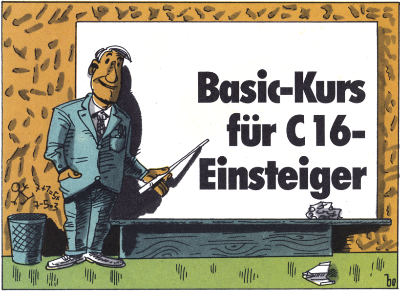
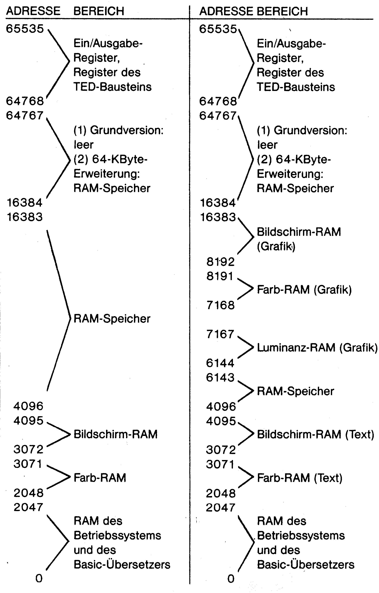
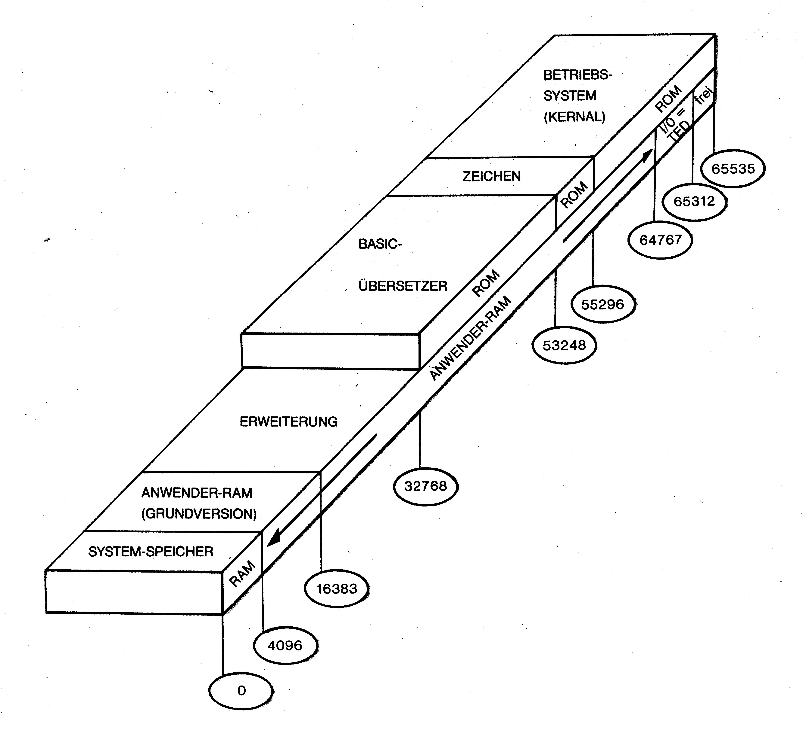
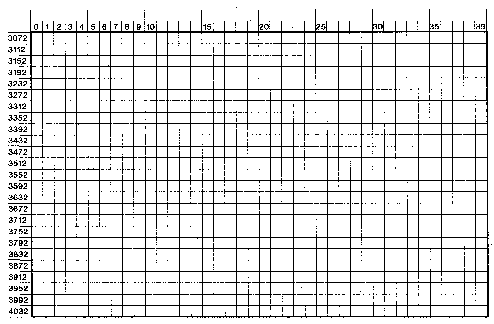
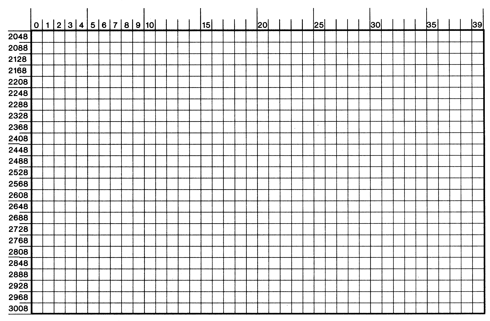
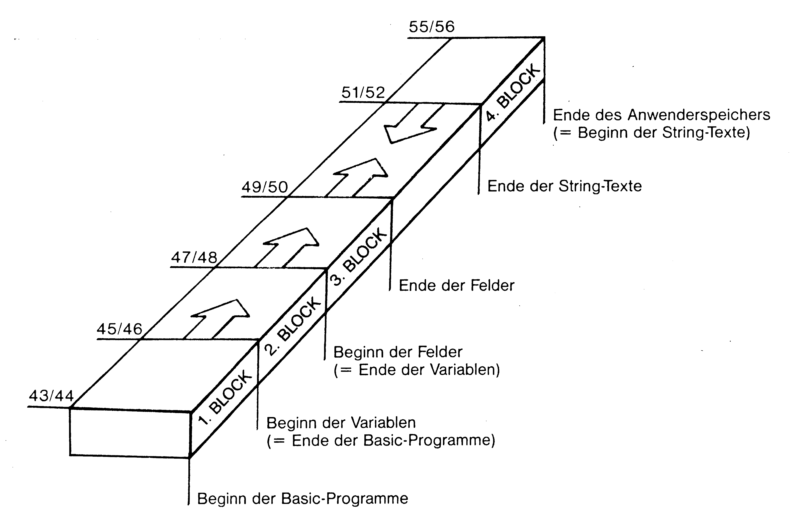

Basic-Kurs für C 16-Einsteiger
Der C 16 hat gegenüber seinem »großen« Bruder, dem C 64, zwar deutlich weniger Speicherplatz, aber dafür ein sehr umfassendes Basic, das der C 64 nicht zu bieten hat. Hier zeigen wir Ihnen die Funktionen von häufig gebrauchten Basic-Befehlen. Bauen Sie sich mit Hilfe dieses Kurses nach und nach Ihr eigenes Programm auf.

Eine ganze Zeit lang galt der C 16 als das schwarze Schaf in der Familie der Heimcomputer von Commodore. Der Speicher ist klein, die akustischen Eigenschaften sind begrenzt, er hat keine Sprites – das sind präzise selbstdefinierbare Figuren. Auch an den Schnittstellen, das sind die Verbindungen des Computers mit der Außenwelt, wurde gespart.
Nicht gespart worden dagegen ist bei der eingebauten Programmiersprache Basic.
Der alte VC 20 und der Dauerbrenner C 64 weisen 69 verschiedene Befehle auf; der C 16 dagegen ist mit 120 Befehlen ausgerüstet! Nur der große C 128 hat noch mehr Befehle, nämlich 164.
Besonders dieser Befehlsvorrat, sicher aber auch der niedrige Preis, hat dem C 16 in der letzten Zeit zu einem rasanten Aufstieg verholfen. Auch der kleine Speicher ist inzwischen erweiterbar – auf 60600 verfügbare Byte! Damit übertrumpft der C 16 in drei wesentlichen Punkten den C 64: Basic-Befehle, Speicher, Preis.
1. Der Lerncomputer
Ist der C 16 wirklich ein echter Lerncomputer?
Ein Computer, der geeignet sein soll, Anfängern das Verständnis und den Gebrauch zu erleichtern, muß drei Voraussetzungen erfüllen:
a) er muß einfach zu bedienen sein
b) er muß eine simple Programmiersprache besitzen, die aber aus vielen Befehlen bestehen soll, so daß später auch komplizierte Programme geschrieben werden können
c) es muß genügend und leicht verständliche Literatur geben, die bei Anfängern die Begeisterung zur Computerei weckt.
Die ersten beiden Bedingungen sind beim C 16 ganz sicher gegeben.
Daß aber die dritte Bedingung zutrifft, kann man mit gutem Gewissen heute noch nicht behaupten. Einen Teil dieser Lücke zu füllen ist das Ziel dieses Kurses.
Ich werde allerdings nicht von ganz vorn anfangen. Im Sonderheft 5/86, das im Mai erschienen ist, steht von Seite 40 bis Seite 68 ein »Basic-Kurs von Anfang an«. Er ist zwar ursprünglich für den C 64 geschrieben worden, aber am Ende hat sich herausgestellt, daß er für den C 16 genauso anwendbar ist.
Dieser Anfangskurs schafft nämlich mit der Besprechung von 23 grundlegenden Basic-Befehlen eine Basis, die auch für den C 16 gilt. Ich brauche diese Befehle deshalb hier nicht zu wiederholen. Wenn Sie gerade erst Ihren C 16 bekommen und noch nie programmiert haben, dann ist der Anfangskurs im Sonderheft 5/86 genau der richtige Einstieg für Sie. Selbst wenn Sie schon eine Ahnung vom Programmieren haben, ist die Lektüre des Anfangskurses sicher keine Zeitverschwendung, da er viele Tips und Kochrezepte zu den folgenden Befehlen enthält:
| IF-THEN | CHR$ | FOR-TO | |
| LET | END | ASC | STEP |
| LIST | REM | LEFT$ | NEXT |
| RUN | RND(X) | MID$ | READ |
| NEW | INT(A) | RIGHT$ | DATA |
| INPUT | GET | LEN | RESTORE |
| GOTO |
Dieser Kurs schließt sich also nahtlos an den Anfangskurs an und geht in gemischter Folge sowohl auf weitere Basic-Befehle ein, die in allen Commodore-Computern enthalten sind, als auch auf die speziellen C 16-Befehle. Ich möchte allerdings darauf hinweisen, daß diese speziellen Befehle des C 16 auch im C 128 enthalten sind. Zur besseren Übersicht, wie sich die Befehle auf die Commodore-Computer verteilen, habe ich sie im Anhang dieses Kurses in einer Tabelle zusammengestellt.
Ich mache übrigens keinen Unterschied zwischen Befehlen, Anweisungen, Funktionen und dergleichen. Die Unterschiede sind oft nur akademisch und haben auf die Anwendung keinen Einfluß. Für Sie ist es sicher einfacher, wenn ich alle »Befehle« nenne.
Bevor wir anfangen, will ich schnell noch die Methode erwähnen, mit der Sie den Kurs am besten verfolgen und den Stoff nachvollziehen können.
Ich habe diese Vorgehensweise »Simulationsmethode« genannt, was nichts anderes bedeutet, als den Basic-Kurs vor dem Computer sitzend zu lesen und alle Listings sofort einzutippen und auszuprobieren.
2. Die kleinen Unterschiede des C 16
Ich habe einige Absätze weiter oben behauptet, der Inhalt des Anfangskurses gelte für alle Commodore-Computer. Das war etwas voreilig, denn ein paar kleine Unterschiede gibt es doch, allerdings nicht die Basic-Befehle betreffend.
Die kleinen Unterschiede betreffen die Tastatur des C 16, speziell die Steuertasten und die Funktionstasten:
— die Taste <ESC> (links oben) ist neu hinzugekommen. Ihre Funktion ist im Handbuch beschrieben.
— die Funktionstasten (rechts), die beim VC 20 und C 64 nur über ihre ASCII-Codes verwendet werden können, sind beim C 16 mit Funktionen belegt. Wie die im Anfangskurs auf Seite 61 bis 63 beschriebene Verwendung der Funktionstasten auch beim C 16 funktioniert, werde ich noch näher erklären.
— es gibt keine <RESTORE>-Taste. Ihre Funktion wird durch den viel radikaleren Reset-Taster ersetzt.
— alle anderen Steuertasten arbeiten so, wie im Anfangskurs beschrieben; einige von ihnen befinden sich auf der Tastatur des C 16 an einer anderen Stelle, was uns aber nicht stören soll.
3. Variable machen Programme variabel
Variablen habe ich bereits im Anfangskurs behandelt, allerdings nur in einer ersten »Ausbaustufe«. Bevor ich ihre Bedeutung erweiternd erkläre, will ich – ihrer Wichtigkeit wegen – das im Anfangskurs Gesagte kurz wiederholen.
Mit dem Begriff »Variable« werden Namen bezeichnet, unter denen sich der Computer Zahlenwerte oder Buchstabenfolgen merken kann. »Merken« bedeutet bei einem Computer, daß die Zahlen oder Buchstaben im Speicher festgehalten sind und, so oft man will, aus dem Speicher herausgeholt werden können, vorausgesetzt, man kennt ihren Namen.
Nichts ist besser als Ausprobieren. Geben Sie direkt ein:
A=25:B=50:C$="TEXT" (<RETURN>-Taste drücken)
Damit haben wir einer Variablen mit Namen A den Wert 25 zugewiesen, einer anderen mit Namen B den Wert 50 und einer dritten, nämlich C$ das Wort »TEXT«. Mit:
PRINT A:PRINT B (<RETURN>)
können wir die A und B zugewiesenen Werte jederzeit aus dem Speicher auf den Bildschirm bringen.
Oben haben wir noch eine 3. Variable eingegeben, nämlich C$. Das Dollarzeichen $ kennzeichnet sie als eine »String-Variable«, das heißt, ihr Wert ist keine Zahl, sondern eine Buchstabenfolge, auch Zeichenkette oder String genannt. Ein String muß immer zwischen Anführungszeichen stehen. Auch kann er mittels:
PRINT C$ (<RETURN>)
aus dem Speicher geholt werden. Soweit die kurze Wiederholung aus dem Anfangskurs, außerdem möchte ich als Basis für die dann folgende Erweiterung des Variablen-Konzeptes die entsprechende Zusammenfassung wiederholen.
Der Punkt 4 oben ist neu für uns; ich habe im Anfangskurs nichts davon erwähnt.
Aber diese Regel ist wichtig. Probieren Sie es ruhig aus:
SPRINT=25 (<RETURN>)
OTTO=2 (<RETURN>)
führen unweigerlich zur Fehlermeldung SYNTAX ERROR. Warum? Nun, im ersten Wort ist der Befehl PRINT enthalten, das S davor wird als falsche Schreibweise dieses Befehls angesehen und in OTTO ist der Befehl TO enthalten.
Das ist übrigens ein häufiger Fehler, denn wer hat schon alle Basic-Befehle im Kopf. Es ist daher ratsam, auf »schöne« Variablennamen zu verzichten und Variable lieber A3 oder ZZ zu nennen.
Gerade die Kombination eines Buchstabens mit einer Zahl ist sehr vielseitig. Voraussetzung ist, wie Sie sicher wissen, daß der Name mit einem Buchstaben anfängt.
4. Variablen in Feldern (Arrays)
Nun lade ich Sie zu einem Experiment ein.
Wir stellen uns vor, wir benötigten in einem Programm eine Tabelle mit Zahlen, zum Beispiel die Anzahl der Bewohner, die in 10 einstöckigen Häusern einer langen Straße wohnen. Die Adresse der Häuser unterscheidet sich nur durch die Hausnummer, denn der Straßenname bleibt ja gleich. Statt des langen Straßennamens nehmen wir nur einen Buchstaben, zum Beispiel T. Zur Kennzeichnung der 10 verschiedenen Adressen hängen wir die Ziffern 0 bis 9 hinten an. Die Zahl 10 können wir nicht nehmen, weil nach nach Punkt 3 der obigen Zusammenfassung die zweistelligen Variablennamen T1 und T10 identisch sind.
In unserem Beispiel wollen wir den einzelnen Häusern Bewohnerzahlen zuweisen, die jeweils um 2 größer sind als die Hausnummer.
10 T0=2
20 T1=3
30 T2=4
40 T3=5
.
.
.
100 T9=11
110 PRINT T0;T1;T2;T3;T4;T5;T6;T7;T8;T9
Das ist natürlich eine sehr umständliche Arbeit, und langweilig ist diese dauernde Wiederholung obendrein. Also, wie geht das einfacher und eleganter? Natürlich mit einer FOR-TO-NEXT-Schleife. Aber aufgepaßt: bei ihrer Verwendung müssen wir die Hausnummer N in Klammern dem Straßennamen T anhängen. Anders akzeptiert das der C 16 in Basic nicht. Als Programm sieht das so aus:
10 FOR N=0 TO 9
20 T(N)=N+2
30 PRINT T(N)
40 NEXT N
Ihnen ist natürlich klar, daß Straßenname T plus Hausnummer (N) eine Variable ist, der wir Werte (Bewohner) zuweisen.
Aber eins sollte Sie stutzig machen. Wie unterscheiden sich diese speziellen Variablen voneinander? Sind nicht T(3) und T(8) identisch, wenn nach der oben schon zitierten Regel nur die ersten beiden Zeichen des Namens – hier T( – hergenommen werden?
Nun, die Klammer macht den Unterschied. Durch sie wird ein neuer Typ einer Variablen, eine sogenannte Feld-Variable definiert, und Feld-Variablen unterscheiden sich durch die Zahl innerhalb der Klammer. Diese Zahl heißt Index (Mehrzahl: Indizes). Warum sie ausgerechnet Feld-Variable heißt, erkläre ich gleich.
Vorher, bei der Schreibweise T0,T1 etc. waren wir auf 10 Variablen beschränkt, weil T1 und T10 dieselbe Variable war.
Jetzt – mit Indizes als Unterscheidungsmerkmal – gilt diese Beschränkung nicht. Deshalb wollen wir die Anzahl der Indizes im Progrämmchen noch erhöhen. Bei einem N von 0 bis 10 geht es ohne Probleme. Aber ab 11 ist schon wieder Feierabend. Wir erhalten die Fehlermeldung »BAD SUBSCRIPT ERROR IN 20«. Um Ihnen das zu erklären, muß ich genauer beschreiben, was passiert, wenn wir eine Variable mit einem Index in Klammern verwenden.
Wenn wir eine Variable so schreiben:
T(1)=25
dann nimmt der Computer an, daß wir in einer Tabelle noch mehrere derartige Variable T() verwenden wollen – klar, sonst würden wir uns ja die Mühe mit der Klammer nicht machen.
Um uns die Sache zu erleichtern, reserviert der Computer unter dem Variablennamen T in seinem Speicher von vornherein 11 Plätze, für T(0) bis T(10). Diesen reservierten Bereich können Sie salopp Tabelle nennen; offiziell heißt er Feld oder auf englisch Array. Die alte Regel für den Namen der Variablen gilt jetzt auch nicht mehr, denn zum Unterscheiden der einzelnen Feld-Variablen desselben Anfangsbuchstabens bedient der Computer sich der in Klammer stehenden Index-Zahl.
Die Beschränkung auf eine Feld-(Array-)Größe von 11 Plätzen wäre natürlich sehr lästig, wenn sie nicht umgangen werden könnte. Wenn wir nämlich mehr Platz brauchen, können wir dem Computer mit dem Basic-Befehl DIM unsere Reservierungswünsche mitteilen. DIM ist eine Abkürzung, die aus dem Wort »Dimension« abgeleitet ist. Als Beispiel möge die folgende Programmzeile dienen:
5 DIM T(25)
Sie reserviert im obigen Programm für die Variable T( ) im Speicher ein Feld von 26 Plätzen, von T(0) bis T(25).
Die Größe eines Feldes ist nur durch den vorhandenen Speicherplatz begrenzt. Wenn Sie die Zahl zu groß wählen, verweigert der Computer die Reservierung – natürlich erst nach dem Befehl RUN – mit OUT OF MEMORY, was soviel heißt wie KEINEN PLATZ MEHR IM SPEICHER.
Ein Feld kann also auch aus String-Variablen bestehen:
200 DIM A$(25)
210 A$(0)="FEUER"
220 A$(1)="ZANGEN"
230 A$(2)="BOWLE"
. .
. .
. .
300 FOR N=0 TO 2
310 PRINT A$(N);
320 NEXT N
Dieses kleine Programm reserviert ein Feld von 25 Strings und weist den ersten drei Strings davon je ein Wort zu. Mit RUN 200 gestartet, druckt es das Wort FEUERZANGENBOWLE aus, indem in der Zeile 310 nacheinander für die Werte von N=0 bis N=2 die gespeicherten Strings A$(0) bis A$(2) durch das Semikolon nach dem PRINT-Befehl aneinandergeklebt werden. Das Eintragen der einzelnen Werte in die Tabelle, das ich in den Zeilen 210 bis 230 vorgenommen und danach nur noch angedeutet habe, geht viel eleganter mit den Befehlen READ - DATA, die im Anfangskurs auf Seite 65 beschrieben sind.
Um das zu zeigen, schlage ich Ihnen eine kleine Anwendung – im Computerdeutsch heißt so ein Programm »Utility« – vor, und zwar eine Nachschlagliste von Geburtstagen Ihrer Freunde und Verwandten. Natürlich ist das kein Utility-Programm, wegen dem ich mir einen Computer kaufen würde, aber für unsere Zwecke hier ist es ganz passend.
Ich lege das Beispiel vorerst einmal auf 5 Namen (N$) und dazugehörige Geburtstagsdaten (D$) aus. Wir brauchen also 2 Felder mit je 5 Plätzen, dazu zwei DATA-Zeilen mit den Eintragungen. Verwenden Sie bitte meine wirr erscheinenden Zeilennummern; am Ende passen sie schon zusammen.
20 DIM N$(4)
500 DATA MAX,MORITZ,MARIA,HANS,LUISE
120 DIM D$(4)
600 DATA 12.6.52,3.4.60,21.1.40,19.9.56,11.11.70
Denken Sie bitte daran: DIM N$(4) legt 5 Plätze fest, nämlich 0 bis 4.
Denken Sie ebenfalls daran, daß Eintragungen in DATA-Zeilen durch ein Komma voneinander getrennt sein müssen. So, jetzt brauchen wir für beide Felder eine Schleife, mit der die Eintragungen der DATA-Zeilen mit READ in das jeweilige Feld gelesen werden. Für das Namensfeld gilt:
30 FOR I=0 TO 4
40 READ N$(I)
50 NEXT I
Dasselbe machen wir für das zweite Feld der Geburtstage:
130 FOR I=0 TO 4
140 READ D$(I)
150 NEXT I
Jetzt brauchen wir noch einen Programmteil, der nach Eingabe eines Namens das dazugehörige Geburtstagsdatum heraussucht und ausdruckt. Für die »Dazugehörigkeit« benützen wir die Indizes der Feld-Variablen. Das bedeutet nichts anderes, als daß zum zweiten Namen N$(2) das zweite Datum D$(2) gehört.
Doch zuerst stellen wir per INPUT die Frage F$ nach dem Namen, dessen Geburtstag wir wissen wollen:
200 INPUT "NAME";F$
Dann vergleichen wir in einer weiteren Schleife die gespeicherten Namen N$(I) mit dem gefragten Namen F$. Wenn bei einem bestimmten Wert I der Vergleichsschleife die beiden Namen gleich sind, wird der Geburtstag mit demselben Index I ausgedruckt. Das Programm kann dann eine weitere Eingabe eines Namens verlangen (GOTO 200).
210 FOR I=0 TO 4
220 IF N$(I)=F$ THEN PRINT D$(I):GOTO 200
230 NEXT I
Um den Vergleichs- und Entscheidungsvorgang genau zu verstehen, brauchen Sie lediglich die Schleifen durchzuspielen, indem Sie die Werte von I gedanklich hochzählen und im Programm nachschauen, was passiert. Wir können aber zum Verständnis auch eine »Lehrzeile« (mit h!) einfügen, die uns den jeweiligen Stand des Vergleiches anzeigt:
215 PRINT I;F$,N$(I);D$(I)
Nach RUN und nach Eingabe eines der fünf Namen sehen wir am Bildschirm eine Reihe mit steigenden Werten von I, daneben (Semikolon!) den eingegebenen Namen, dann in einem größeren Abstand (Komma!) die Namen und Daten, und zwar solange, bis F$ und N$ gleich sind.
Nehmen Sie jetzt Zeile 215 wieder heraus, aber fügen Sie bitte eine Zeile 240 dazu, die wir für ein bedienungsfreundliches Programm brauchen. Wir müssen nämlich Vorkehrung für den Fall treffen, daß ein Name eingegeben wird, der nicht in der Liste steht. Auch Tippfehler fallen in diese Kategorie. Wenn kein positiver Vergleich zwischen F$ und N$ innerhalb der Schleife auftritt, macht das Programm nach der Schleife weiter, mit der neuen Zeile 240, die für sich selbst spricht:
215
240 PRINT"NAME IST NICHT IN DER LISTE"
Das ganze Programm sieht so aus:
20 DIM N$(4)
30 FOR I=0 TO 4
40 READ N$(I)
50 NEXT I
120 DIM D$(4)
130 FOR I=0 TO 4
140 READ D$(I)
150 NEXT I
200 INPUT "NAME";F$
210 FOR I=0 TO 4
220 IF N$(I)=F$ THEN PRINT D$(I):GOTO 200
230 NEXT I
240 PRINT"NAME IST NICHT IN DER LISTE"
500 DATA MAX,MORITZ,MARIA,HANS,LUISE
600 DATA 12.6.52,3.4.60,21.1.40,19.9.56,11.11.70
Der DIM-Befehl und der READ-Befehl haben beide eine zusätzliche Eigenschaft, die uns eine wesentliche Verbesserung dieses Programms erlaubt:
Man darf hinter einem einzigen DIM-Befehl mehrere Felder dimensionieren. Sie müssen lediglich durch ein Komma getrennt sein. Genauso darf man mit einem einzigen READ-Befehl mehrere Werte-Gruppen auslesen. Hier gilt dieselbe Kommaregel wie bei DIM.
Damit können wir die Zeilen 20 bis 150 stark verkürzen:
20 DIM N$(4),D$(4)
30 FOR I=0 TO 4
40 READ N$(I),D$(I)
50 NEXT I
Die Zeile 20 ist einfach nur eine Zusammenziehung der beiden alten Zeilen 20 und 120. Die Funktion des DIM-Befehls bleibt dabei erhalten – er dimensioniert halt gleich beide Felder.
Beim »doppelten« READ-Befehl in Zeile 40 hat sich in der Arbeitsweise, verglichen mit den alten Zeilen 40 und 140, etwas geändert. Schuld daran ist aber die FOR-NEXT-Schleife der Zeile 30.
Bei jedem Wert von I holt sich der READ-Befehl zwei hintereinanderliegende Werte aus den DATA-Zeilen und weist sie den beiden Variablen N$ und D$ zu. Wir müssen diesem Vorgang dadurch Rechnung tragen, daß wir den Inhalt der DATA-Zeilen umorganisieren. Es müssen jetzt immer je ein Name und das dazugehörige Geburtsdatum hintereinander kommen – was eigentlich viel leichter einzutippen ist.
Sie sehen, gute Programmierung ist fast immer auch klarer und logischer.
500 DATA MAX,31.3.55,MORITZ,12.4.45,HANS,6.2.60
600 DATA MARIA,14.7.63,LUISE,8.9.60
Diese Anordnung bietet noch einen weiteren Vorteil. Das Programm, oder besser gesagt die Geburtstagskartei, kann ganz leicht erweitert werden. Einen neuen Namen samt Datum brauchen Sie nur durch Komma getrennt hinter die letzte Eintragung der DATA-Zeilen zu schreiben.
Doch halt! Noch etwas fehlt: Die Zahl der Namen, die sich durch eine neue Eintragung natürlich erhöht, kommt ja im Programm auch vor, und zwar in unserem Fall als Ziffer 4 in den Zeilen 20, 30 und 210. Um uns diese Zusatzarbeit ebenfalls zu erleichtern, geben wir dieser Zahl einen Variablennamen Z, definieren dieses Z ganz am Anfang und brauchen so bei jeder neuen Namenseintragung nur dieses Z um 1 erhöhen.
Diese Zeilen sehen jetzt so aus:
10 Z=4
20 DIM N$(Z),D$(Z)
30 FOR I=0 TO Z
210 FOR I=0 TO Z
Wir haben jetzt ein komplettes kleines Programm, dessen zusammengewürfelte Zeilennummern ihm allerdings ein unfertiges Aussehen verleihen.
Hier hilft uns ein Basic-Befehl, der Zeilennummern »umnumeriert«. Er heißt RENUMBER.
Wenn wir diesen Befehl ohne Zusätze verwenden:
RENUMBER (<RETURN> nicht vergessen)
dann erhält das kleine Programm neue Zeilennummern, die mit 10 anfangen und in Zehnerschritten weitergehen. Sehr wichtig dabei ist, daß RENUMBER die Zeilennummer hinter dem GOTO-Befehl automatisch auf den richtigen neuen Wert umändert. Mit LIST können Sie das Resultat überprüfen.
Das ist aber noch nicht alles. Eine Zahl hinter dem RENUMBER-Befehl läßt die Zeilennumerierung eines Programms ab dieser Zahl beginnen.
RENUMBER 1000
LIST
beweist es Ihnen.
Zu guter Letzt kann auch noch die Schrittweite, also der Zahlenabstand zwischen den Programmzeilen, ausgewählt werden durch Angabe einer zweiten Zahl:
RENUMBER 10,100
gibt uns ein Programm, desssen erste Zeile mit 10 beginnt, alle anderen Zeilen dagegen mit einem Abstand von 100 weiterzählen.
Für unser Programm schlage ich vor, ab Zeile 10 zu beginnen und in Zehnerschritten weiterzumachen.
5. Grafische Verschönerungsmittel
Der C 16 besitzt erstaunliche grafische Fähigkeiten.
Als erstes wollen wir das Resultat der Datumssuche, nämlich das ganz unscheinbar hingedruckte Geburtsdatum, hervorheben. Dazu gibt uns der C 16 drei Hilfsmittel:
— farbige Schrift
— invertierte Schrift
— blinkende Schrift
Im Direkt-Modus, das heißt ohne Zeilennummern direkt eingetippt, kann die Farbe der Zeichen und Buchstaben durch gleichzeitiges Drücken der <CTRL>-Taste beziehungsweise <Commodore>-Taste und einer der acht Farbtasten eingestellt werden.
Beide Vorgänge sind im Commodore-Handbuch auf Seite 49 bis 51 gut beschrieben.
Auf Seite 23 sind zwei weitere Tasten genannt, <FLASH-ON> und <FLASH-OFF>, die gleichzeitig mit <CTRL> gedrückt einen Blinkeffekt hervorrufen.
Wie können wir dasselbe im Programm-Modus machen?
Im Anfangskurs habe ich ab Seite 58 unter der Überschrift »Programmierte Steuertasten« diese Vorgehensweise bereits beschrieben. Sie verwendet die sogenannten ASCII-Codewerte der Steuer- und Farbtasten, die mit dem PRINT-Befehl die Funktionen dieser Tasten ausführen.
Die ASCII-Codewerte stehen dabei in Klammern hinter dem Basic-Befehl CHR$.
PRINT CHR$(18)"ABC"
zum Beispiel druckt die drei Buchstaben in invertierter Darstellung.
Wichtig ist natürlich die Kenntnis aller entsprechenden ASCII-Werte. Im Bedienungshandbuch von Commodore ist ab Seite 215 eine Codetabelle enthalten, nur ist sie leider nicht ganz vollständig. Ich habe daher in Tabelle 1 die ASCII-Codewerte und die invertierten Zeichen aller Steuertasten zusammengestellt. Die invertierten Zeichen treten bekanntlich dann auf, wenn im Anführungszeichen-Modus (nach einem Anführungszeichen) eine Taste gedrückt wird.
| Funktion | Taste(n) | Zeichen | ASCII |
|---|---|---|---|
| schwarz | CTRL-1 | 144 | |
| weiß | CTRL-2 | 5 | |
| rot | CTRL-3 | 28 | |
| lila | CTRL-4 | 159 | |
| purpur | CTRL-5 | 156 | |
| grün | CTRL-6 | 30 | |
| blau | CTRL-7 | 31 | |
| gelb | CTRL-8 | 158 | |
| orange | C=-1 | 129 | |
| braun | C=-2 | 149 | |
| gelbgrün | C=-3 | 150 | |
| rosa | C=-4 | 151 | |
| blaugrün | C=-5 | 152 | |
| hellblau | C=-6 | 153 | |
| dunkelblau | C=-7 | 154 | |
| hellgrün | C=-8 | 155 | |
| Revers ein | CTRL-9 | 18 | |
| Revers aus | CTRL-0 | 146 | |
| Cursor nach oben | CRSR↑ | 145 | |
| Cursor ab | CRSR↓ | 17 | |
| Cursor links | CRSR← | 157 | |
| Cursor rechts | CRSR→ | 29 | |
| Schirm löschen | SHIFT-CLEAR/HOME | 147 | |
| Cursor Home | CLEAR/HOME | 19 | |
| Insert | SHIFT-INST/DEL | 148 | |
| Delete | INST/DEL | 20 | |
| Return | RETURN | 13 | |
| Shift-Return | SHIFT-RETURN | 141 | |
| Escape | ESC | 27 | |
| Blinken ein | CTRL-, |  |
130 |
| Blinken aus | CTRL-. | 132 | |
| Klein/Großbuchstaben | SHIFT-C= | 14 | |
| Großbuchstaben/Zeichen | SHIFT-C= | 142 | |
| Funktionstaste f1 | F1 | 133 | |
| f2 | F2 | 137 | |
| f3 | F3 | 134 | |
| f4 | SHIFT-F1 | 138 | |
| f5 | SHIFT-F2 | 135 | |
| f6 | SHIFT-F3 | 139 | |
| f7 | SHIFT-HELP | 136 | |
| f8 | HELP | 140 |
Als erstes wollen wir das Ausdrucken des Geburtstages in Zeile 80 (vor dem RENUMBER hatte sie die Nummer 220) durch den Zusatz CHR$(18) invertieren:
80 IF N$(I)=F$ THEN PRINT CHR$(18) D$(I):GOTO 60
Der Zusatz des Codewertes 130 läßt den Datumsausdruck blinken:
80 IF N$(I)=F$ THEN PRINT CHR$(18) CHR$(130) D$(I):GOTO 60
Wenn wir jetzt noch weitere CHR$-Befehle hinzufügen, dann wird langsam die Zeile zu klein – ein Grund für mich, die platzsparende Anführungszeichen-Methode vorzuführen.
Tippen Sie bitte in Zeile 80 nach dem Befehl PRINT ein Anführungszeichen und danach – gleichzeitig mit der <CTRL>-Taste – die <RVS-ON>-Taste, die <FLASH-ON>-TASTE und die Taste für die Farbe <BLAU> (<BLUE>). Schließen Sie bitte noch vor dem D$(I) das Ganze mit einem Schlußzeichen (zweites Anführungszeichen) ab. Alle CHR$-Befehle von vorher müssen Sie löschen.
Auf dem Bildschirm steht jetzt:
80 IF N$(I)=F$ THEN PRINT "{rvs on}{flash-on}{blue}" D$(I):GOTO 60
Beachten Sie bitte die Schreibweise für die »Steuerzeichen«. {rvs on} bedeutet, daß hier das Steuerzeichen für »Invertierte Schrift Ein« steht; ein revers geschriebenes »R«.
Nach RUN erscheint der Datumsausdruck invertiert, blinkend und in blauer Farbe.
PRINT"{flash-on}" erreicht dasselbe wie PRINT CHR$(130)
PRINT"{blue}" erreicht dasselbe wie PRINT CHR$(31)
Die Gründe, warum die invertierten Steuerzeichen in Zeitschriften und gedruckten Listings selten vorkommen, liegen einmal in dem nicht ganz einfachen Druck dieser Zeichen, zum andern in ihrer schlechten Lesbarkeit.
Anmerkung: Beim C 16 sind nach dem Einschalten des Computers die acht Funktionstasten mit festen Funktionen belegt. Die in der Tabelle genannten ASCII-Codewerte stehen deswegen erst nach einer Löschung dieser Funktionen zur Verfügung. Dieser Vorgang wird bei der Behandlung des Basic-Befehls KEY erklärt.
Ich ziehe normalerweise den CHR$-Befehl vor, es sei denn, ich gerate in Platznot, so wie oben.
Eine letzte Verfeinerung des Programms sei mir gestattet. Im Gegensatz zu <REVERS-ON> und <FLASH-ON>, die beide nur innerhalb einer einzigen Programmzeile wirken, bleibt eine Farbumschaltung für alle folgenden Programmteile erhalten. Wir müssen also nach dem PRINTen von D$(I) wieder auf die ursprüngliche Zeichenfarbe schwarz (black) zurückschalten:
80 IF N$(I)=F$ THEN PRINT"{rvs on}{flash on}{blue}"D$(I) "{black}":GOTO 60
In Listing 1 ist das ganze Programm, so wie es jetzt steht, zusammengefaßt abgedruckt:
6. Zweidimensonale Felder (Arrays)
Hinter dieser Überschrift verbirgt sich eine Erweiterung des DIM-Befehls:
— eindimensional ist eine Linie; sie hat nur in einer Richtung eine Ausdehnung
— zweidimensional ist eine Fläche; sie hat eine Länge und eine Breite.
Diese Betrachtungsweise kann auch auf Variablenfelder angewendet werden.
Ich habe bei der ersten Erklärung des Begriffs »Feld« und »Feldvariable« den Vergleich mit einstöckigen Häusern in einer Straße verwendet. Unser damaliges Beispiel könnte man so aufmalen:
| Bewohner | 2 | 3 | 4 | 5 | 6 |
| Adresse | T(0) | T(1) | T(2) | T(3) | T(4) |
Ein zweidimensionales Feld ist eine Tabelle, in der sowohl waagrecht wie senkrecht Eintragungen möglich sind:
In unserem Beispiel sind das Häuser, die mehrere Stockwerke und pro Stockwerk verschiedene Bewohnerzahlen haben. Der Einfachheit halber gebe ich allen Häusern dieselbe Zahl von Stockwerken.
| Stockwerk | 3 | T(0,3) | T(1,3) | T(2,3) | T(3,3) | T(4,3) |
|---|---|---|---|---|---|---|
| 2 | T(0,2) | T(1,2) | T(2,2) | T(3,2) | T(4,2) | |
| 1 | T(0,1) | T(1,1) | T(2,1) | T(3,1) | T(4,1) | |
| 0 | T(0,0) | T(1,0) | T(2,0) | T(3,0) | T(4,0) | |
| Hausnummer | 0 | 1 | 2 | 3 | 4 |
Bei diesen Reihenhäusern habe ich nicht mehr die Zahl der Bewohner in die Häuser beziehungsweise Stockwerke geschrieben, sondern die »Adressen«, die wieder unsere Feld-Variablen sind. Nur haben sie diesmal zwei Indizes, einen für das Stockwerk (Zeile des Feldes) und einen für die Hausnummer (Spalte des Feldes).
Wenn wir jetzt sagen wollen, daß im 3. Stock des 1. Hauses 7 Leute wohnen, legen wir das fest mit:
T(1,3)=7
Bei der Definition einer zweidimensionalen Variablen T(A,B) reserviert auch diesmal wieder der Computer ein Feld von 11 Variablen, allerdings pro Index, das heißt insgesamt 11 x 11=121 Plätze.
Ein kleines Programm beweist diese Behauptung:
10 FOR I=0 TO 10
20 FOR K=0 TO 10
30 T(I,K)=I+K
40 PRINT T(I,K);
50 NEXT K
60 NEXT I
Ich habe es extra so geschrieben, daß Sie die beiden Schleifen besser sehen können. Pro Durchlauf der äußeren I-Schleife läuft die innere K-Schleife 11mal durch. Dementsprechend sieht das Resultat der Zeile 40 aus.
Wenn Sie jetzt die obere Grenze von I auf 11 erhöhen, merkt das Programm erst nach dem 121. Durchlauf, daß zuwenig Platz reserviert worden ist. Lassen Sie dagegen das I auf maximal 10, erhöhen aber das K auf 11, bleibt das Programm schon nach dem ersten Durchlauf der inneren Schleife stehen.
Das war eine kleine Erinnerung an die Wirkungsweise geschachtelter Schleifen.
Wenn wir ein größeres Feld benötigen, müssen wir diesen Bedarf wieder mit dem DIM-Befehl eingeben:
DIM T(25,34)
Um Ihnen ein lehrreiches Beispiel für ein zweidimensionales Feld zu geben, in dem auch noch andere, für den C 16 typische Anweisungen vorkommen, mache ich einen kurzen Ausflug in die Welt der Töne.
7. Hat man da Töne?
Im C 16 sind zwei unabhängige Stimmen eingebaut. Mit beiden kann er singen wie ein Zeisig, mit der zweiten Stimme krächzt und zischt er zusätzlich wie eine heisere Katze. Mit diesen beiden Tongeneratoren lassen sich allerdings recht raffinierte Klangkombinationen erzielen.
Prinzipiell werden bei jedem tonerzeugenden Instrument drei Eigenschaften variiert:
— die Tonhöhe (T)
— die Lautstärke (L)
— die Tondauer (D)
Was für jede Flöte und jedes Saxophon gilt, gilt auch für die Stimmen des C 16.
Mit dem Befehl VOL, einer Abkürzung des englischen Wortes »Volume« für Lautstärke, kann diese in 9 Stufen, von 0 bis 8, verändert werden.
Zur Festlegung von Tonhöhe und Tondauer gibt es einen zweiten Befehl SOUND, den ich eigentlich nicht zu übersetzen brauche, ist uns das Wort doch aus der heutigen Musik bekannt. Der SOUND-Befehl hat drei Variablen hinter sich stehen: mit der ersten werden die bereits genannten Tongeneratoren 1 oder 2 ausgewählt, die zweite Variable bestimmt die Tonhöhe mit Werten von 0 bis 1023, die dritte Variable gibt die Tondauer an und zwar von 1/50 Sekunde (0) bis 22 Minuten (65535). Ein schneller Direkt-Versuch zeigt es uns:
VOL 3:SOUND 1,500,50 (<RETURN>)
Aber lustiger und eindrucksvolller ist es, wenn sich bei Tönen etwas verändert. Dazu ein kleines Programm:
10 FOR L=0 TO 8
20 VOL L
30 SOUND 1,800+L*10,50
40 NEXT L
Sowohl die Lautstärke L in Zeile 20, als auch die Tonhöhe im 2. Ausdruck hinter dem SOUND-Befehl (mit L*10), werden in 9 Schritten verändert. Nur die Tondauer bleibt konstant auf 1 Sekunde (1/50 mal 50).
Der 2. Tongenerator wird mit SOUND 2,... ausgewählt. Er klingt, wie Sie sich leicht überzeugen können, genauso wie der erste. Aber Tongenerator 2 kann auch rauschen. Statt SOUND 2 braucht man nur SOUND 3 schreiben.
Daß es sich um nur zwei Tongeneratoren handelt, kann ich durch Einfügen einer weiteren Zeile, die den 2. Tongenerator einschalten soll, beweisen:
35 SOUND 2,700+L*10,50
Der Anfangston der 2. Stimme liegt durch den Wert 700 etwas tiefer. Nach RUN erklingen beide Stimmen gleichzeitig. Wenn Sie SOUND 2 durch SOUND 3 ersetzen, klingt eine Stimme und das Rauschen gleichzeitig. Wenn Sie aber in Zeile 30 SOUND 2 und in Zeile 35 SOUND 3 einsetzen, erklingt die Stimme und das Rauschen abwechselnd.
| Ton | kleine Oktave | eingestrich. Oktave | zweigestrich. Oktave | dreigestrich. Oktave | viergestrich. Oktave | fünfgestrich. Oktave |
|---|---|---|---|---|---|---|
| A | 7 | |||||
| Ais/B | 66 | |||||
| H | 118 | |||||
| C | 169 | 596 | 810 | 917 | 970 | 997 |
| Cis/Des | 220 | 620 | 822 | 923 | 973 | 999 |
| D | 262 | 643 | 834 | 929 | 977 | 1002 |
| Dis/Es | 300 | 664 | 844 | 934 | 979 | 1004 |
| E | 345 | 685 | 854 | 939 | 982 | 1006 |
| F | 383 | 704 | 864 | 944 | 984 | 1010 |
| Fis/Ges | 428 | 725 | 872 | 948 | 986 | 1011 |
| G | 453 | 739 | 881 | 953 | 988 | 1013 |
| Gis/As | 483 | 754 | 889 | 956 | 990 | |
| A | 516 | 770 | 897 | 960 | 992 | |
| Ais/B | 543 | 784 | 904 | 963 | 994 | |
| H | 571 | 798 | 911 | 967 | 996 |
Jetzt sind wir gerüstet, um eine Anwendung eines zweidimensionalen Feldes aufzubauen. Ich will Ihnen ein Programm zeigen, welches uns in recht einfacher Weise gestattet, eine Melodie zu komponieren und zu variieren.
8. Eine zweidimensionale Melodie
Als Melodie sollen uns dabei die ersten acht Takte der deutschen Nationalhymne dienen, die erstens allen bekannt sein dürfte, zweitens nur fünf verschiedene Tonhöhen hat, aber dafür drei Tondauern.
Wir könnten nun natürlich einfach in neun Programmzeilen pro Ton einen SOUND-Befehl mit entsprechenden Variablen schreiben. Aber dann gibt uns das Programm nur diese eine Melodie, ohne die Möglichkeit, sie zu variieren.
Das erreichen wir, wenn wir die Töne und ihre Dauer mit dem INPUT-Befehl in ein zweidimensionales Feld plazieren, das dann wie folgt aussieht:
| M(x,0) | M(x,1) | |
|---|---|---|
| 1. Ton | (0,0) | (0,1) |
| 2. Ton | (1,0) | (1,1) |
| 3. Ton | (2,0) | (2,1) |
| 8. Ton | (7,0) | (7,1) |
| 9. Ton | (8,0) | (8,1) |
Die Feldvariable M(x,0) soll für die Tonhöhe und M(x,1) für die Dauer eines Tones stehen.
Wir dimensionieren nun ein Feld für 9 mal 2 Eintragungen und zählen in einer Schleife die neun Töne der Melodie hoch. In jedem Durchgang der Schleife fragen wir per INPUT nach der Tonhöhe und der Dauer des jeweiligen Tones und nennen sie T und D:
10 DIM (8,1)
20 FOR I=0 TO 8
30 INPUT "TON,DAUER";T,D
40 M(I,0)=T
50 M(I,1)=D
60 NEXT I
Zwei Punkte sind dabei interessant:
Den ersten habe ich bereits genannt, er ist aber so wichtig, daß ich ihn wiederholen möchte: In den Feld-Variablen M(X,Y) bedeutet der erste Index die laufende Nummer des Tones, der zweite Index die Tonhöhe (0) oder die Dauer (1).
Der zweite Punkt taucht hier zum ersten Mal auf, nämlich die Eigenschaft des INPUT-Befehls, genau wie bei DIM oder READ, gleich mehrere Variable verarbeiten zu können. Im Programm müssen dann nach dem auffordernden Fragezeichen entsprechend viele Eingaben eingetippt werden.
Das Programm wird fortgesetzt mit dem Spielen der Melodie:
70 FOR I=0 TO 8
80 VOL 3
90 SOUND 1,M(I,0),M(I,1)
100 NEXT I
Nach RUN erscheint die Aufforderung nach Tonhöhe und Dauer des ersten Tones. Wenn Sie Noten kennen, dann können Sie die Tonwerte der Tabelle 2 entnehmen – oder der Tabelle auf Seite 211 des Bedienungshandbuches von Commodore.
Ich empfehle Ihnen, mehrere Durchläufe zu machen, im ersten aber einen konstanten Wert für D, zum Beispiel 50, einzusetzen. Wenn Sie alle Werte eingegeben haben, erklingt die Melodie und Sie können hören, was Sie falsch gemacht haben.
Durch Eingabe von GOTO 70 erklingt die Melodie immer wieder.
Um Fehler zu korrigieren oder die richtige Dauer D einzugeben, fahren Sie mit dem Cursor auf den entsprechenden Wert und verändern die Zahlen, aber auf keinen Fall die <RETURN>-Taste drücken!
Wenn alles auf dem Bildschirm korrigiert ist, bringen Sie den Cursor auf das Wort RUN und drücken <RETURN>. Dadurch wird RUN wie vorher ausgeführt, und Sie müssen lediglich durch wiederholtes Drücken der <RETURN>-Taste die bereits korrigierten Werte »bestätigen«.
Wenn sie durchgelaufen sind, ertönt die korrigierte Melodie. Für die Noten-Unkundigen gebe ich die Zahlenwerte zum Eintippen an. Das soll Sie aber nicht hindern, ebenfalls wie oben beschrieben zu experimentieren.
Auf dem Bildschirm sollte stehen:
RUN
TON,DAUER? 810,60
TON,DAUER? 834,20
TON,DAUER? 854,40
TON,DAUER? 834,40
TON,DAUER? 864,40
TON,DAUER? 854,40
TON,DAUER? 834,20
TON,DAUER? 798,20
TON,DAUER? 810,40
Es gibt natürlich auch noch die konventionelle Methode, einen der SOUND-Werte zu ändern.
Wenn Ihnen zum Beispiel die Tonhöhe des dritten Tones zu tief ist, dann geben Sie einfach den neuen Wert direkt mit ein:
M(2,0)=860
Um die Dauer des letzten Tones zu verdoppeln, genügt die direkte Eingabe:
M(8,1)=80
Abschließend möchte ich Ihnen noch gern zeigen, wie man mit den beiden Tongeneratoren die obige Melodie zweistimmig erklingen läßt. Wir verwenden weiterhin das zweidimensionale Feld.
Der erste Index des Feldes bleibt gleich – er definiert weiterhin die Anzahl der Töne. Der zweite Index wird um 1 erhöht, denn zu der Tonhöhe und der Tondauer kommt jetzt noch die Nummer des Tongenerators hinzu. Wir nennen sie »Stimme« und geben der Variablen den Namen S. Natürlich wird das Feld wegen der zweiten Stimme doppelt so groß, was wir dem Programm mit dem DIM-Befehl der Zeile 10 mitteilen müssen:
10 DIM M(17,2)
20 FOR I=0 TO 17
30 INPUT "STIMME,TON,DAUER";S,T,D
35 M(I,0)=S
40 M(I,1)=T
50 M(I,2)=D
60 NEXT I
70 FOR I=0 TO 17
80 VOL 3
90 SOUND M(I,0),M(I,1),M(I,2)
100 NEXT I
In Zeile 30 wird wie vorher nach den Eingaben gefragt, nur sind es diesmal deren drei. Von den eingeschobenen Zeilen 35 bis 50 werden diese drei INPUTs den drei Feldvariablen zugewiesen und dann in Zeile 90 zum Erklingen gebracht. Die beiden Schleifen laufen jetzt entsprechend der Anzahl der Töne von 0 bis 17.
Um Ihnen die Sache zu erleichtern, gebe ich die ganze Folge der Töne an, die nach den Aufforderungen »STIMME,TON,DAUER?« wie folgt eingegeben werden müssen:
1,810,60 2,798,40
2,685,60 1,854,40
1,834,20 2,810,40
2,739,20 1,834,20
1,854,40 2,739,20
2,810,40 1,798,20
1,834,40 2,704,20
2,739,40 1,810,40
1,864,40 2,685,40
Diese Töne, oder genauer gesagt, das zweidimensionale Feld mit Variablen, welche unsere Töne repräsentieren, steht also im Speicher des C 16 gespeichert. Wenn wir den Computer ausschalten, wird der Speicher gelöscht und alles ist weg.
Es wäre deshalb schön, wenn wir das Feld mit den Tönen auch auf ein Band oder auf eine Diskette speichern könnten, um es bei späterer Gelegenheit wieder in den Computer holen zu können.
Aus dem Betriebshandbuch von Commodore (von Seite 34 bis 45) kennen Sie sicher die Speicher – und Ladebefehle SAVE, LOAD für Kassetten und DSAVE, DLOAD für Disketten.
Diese Befehle speichern und laden jedoch nur Programme, nicht aber Variablenwerte, die im Lauf eines Programms erst erzeugt werden wie zum Beispiel unsere Töne. Um also unsere Melodie mit diesen Befehlen auf Kassette oder Diskette speichern zu können, müßten wir die Zahlenwerte – pro Ton 1 SOUND-Befehl – im Programm festlegen. Es wäre dann allerdings kein Komponier-Programm mehr.
Zum Glück gibt es aber noch eine andere Methode, wie man Variablenwerte speichern kann. Dazu muß ich Ihnen aber erst ein bißchen mehr über den Speicher des C 16 erklären. Speichern Sie bitte dieses Fragment auf Band oder Diskette ab, wir werden es später vervollständigen.
Der nun folgende Abschnitt hat nur indirekt etwas mit Basic zu tun. Aber wie ganz am Anfang betont, komme ich ohne einige Beschreibungen der Eigenschaften oder besser gesagt Eigenheiten des C 16 nicht aus. Einige Kenntnisse des Innenlebens des Computers gehören eben auch zum Programmieren.
9. Das Gedächtnis des Computers
Alle Computer – Großrechenanlagen genauso wie kleine Heimcomputer – sind aus den folgenden Grundbausteinen aufgebaut:
— zentrale Recheneinheit, auch Mikroprozessor oder CPU (Central Prozessing Unit) genannt
— Speichereinheit
— Ein- und Ausgabe-Bausteine
Während die CPU rechnet, alle Vorgänge im Computer steuert, Befehle ausführt und somit das eigentliche Herz des Computers darstellt, braucht man die Ein- und Ausgabe-Bausteine, um Daten in den Computer hinein- oder herauszuleiten. Alle Anschlüsse von Datasette, Diskettenlaufwerk, Drucker und Bildschirm werden von ihnen gesteuert. Der Speicher ist der Notizblock des Computers. In ihm steht alles, was er sich merken soll: Programmzeilen, Variablenwerte, Zeichenketten (Strings) und so weiter. Auf englisch heißt Speicher passenderweise Memory, was wir wiederum auf deutsch mit Gedächtnis übersetzen könnten.
Jeder Computer hat zwei Arten von Speichern:
Das RAM (Random Access Memory) ist ein aus elektronischen Bauteilen aufgebauter Speicher, der für Programme frei verfügbar ist. Wir können in diesen Speicher Daten hineinschreiben und sie wieder herauslesen, ohne sie zu zerstören. Nur nach dem Ausschalten des Computers sind sie weg!
Das passiert auch dann, wenn nur ganz kurzzeitig der Strom ausfällt, etwa bei einem Gewitter oder wenn der Netzstecker einen Wackelkontakt hat.
Es ist deshalb ratsam, bei längeren Programmierarbeiten Zwischenergebnisse, das heißt den jeweiligen Inhalt des RAM auf Kassette oder Diskette abzuspeichern, denn nur dort sind sie dauerhaft sicher.
Das ROM (Read Only Memory) ist nicht frei verfügbar. Es besteht zwar auch aus elektronischen Bauteilen, aber sein Inhalt ist fest »eingebrannt« – man kann ihn nicht ändern. Er wird vom Computer selbst verwendet. Wenn Sie zum Beispiel Ihren C 16 einschalten, dann läuft eine im ROM eingespeicherte Folge von Programmschritten ab, die schließlich mit der Meldung des Computers auf dem Bildschirm endet, mit der er sich bereit (READY) meldet. Im ROM stehen nicht nur die Programmschritte, die den Betrieb des Computers steuern, sondern auch das Programm, welches alle Basic-Befehle in einen Code »übersetzt«, den der zentrale Mikroprozessor (CPU) versteht.
10. Die Adressen der Speicherzellen
Der gesamte Speicher des C 16 ist aus einzelnen Speicherzellen aufgebaut. Der C 16 bietet Platz für 65536 Speicherzellen. Jede dieser Speicherzellen hat eine Nummer, von 0 bis 65535.
Diese Nummern nennen wir Adressen. Um eine Zahl oder ein Zeichen in eine bestimmte Speicherzelle hineinschreiben zu können, müssen wir ihre Adresse kennen. Natürlich gilt dasselbe für das Auslesen. Es liegt deshalb sehr nahe, uns ein »Adreßbuch« des Speichers zu beschaffen.
Im Betriebshandbuch ist eine derartige Liste im Anhang auf Seite 228 unter dem Titel »Speicherbelegung« angegeben. Diese Liste ist aber alles andere als klar und verständlich. In den Bildern 1 und 2 habe ich daher eine andere Darstellung gewählt, die Ihnen eine Übersicht über die verschiedenen Speicherbereiche und ihre Bedeutung geben soll. Aber ein Adreßbuch, oder wie es auf englisch heißt, eine »Memory Map«, ist das eigentlich auch nicht. Dazu müßte ich ja jede einzelne Adresse beschreiben.

Bild 2. Speicher im HiRes-Grafik-Modus
Bild 1 ist also eine Kurzfassung eines Adreßbuches, in der wir aber bereits viel sehen können:
— Der Speicher beginnt ganz unten bei Adresse 0.
— Die ersten 4096 RAM-Speicherzellen werden vom Computer selbst benötigt.
— Ab Adresse 4096 beginnt der RAM-Speicher für Basic-Programme. Ab hier werden alle eingegebenen oder von Band und Diskette geladenen Programme gespeichert. Auch alle Variablen, Felder und Zeichenketten, die im Lauf eines Programms auftauchen, werden dort gespeichert.
— Bei einem C 16 ohne Speichererweiterung endet dieser Speicherbereich bei Adresse 16383.
Theoretisch stehen dem Programmierer also 12287 Speicherplätze zur Verfügung. Warum sich der C 16 nach dem Einschalten mit der Überschrift »12277 Bytes Free« meldet, und wo da zehn Speicherplätze abgezwackt werden, weiß ich leider auch nicht. Mein C 16 meldet sich nämlich mit »60671 Bytes Free«, denn ich habe eine Speichererweiterung eingebaut, die den Programm-Speicher bis zur Adresse 64767 aufstockt. Bei dieser Erweiterung stimmt die Meldung des Computers mit der theoretisch verfügbaren Speicherzahl, nämlich mit der Differenz von 64767 minus 4096, überein. Wie dem auch sei:
— Beim C 16 ohne Erweiterung, also in der Grundversion, ist der Bereich von 16384 bis 64767 leer; das heißt im Klartext, er enthält keine elektronischen Speicherschaltkreise.
— Ganz oben am Ende des Speichers hat der Computer wieder einige Plätze für seinen Eigenbedarf reserviert und zwar von 64768 bis 65535, das sind 768 Speicherplätze.
Alle diese Speicherzellen sind also RAM-Zellen, das heißt, man kann Daten hineinschreiben und herauslesen.
Wo, so werden Sie sicher fragen, ist der ROM-Speicher untergebracht? Des Rätsels Lösung habe ich Ihnen in Bild 3 aufgemalt: Von Adresse 32768 bis 64367 ist der Speicher zweistöckig; der ROM-Speicher sitzt dort auf denselben Adressen wie das RAM.

— von 32768 bis 53247 sind die fest vorgegebenen Programme zum Übersetzen von Basic in den Maschinen-Code enthalten
— anschließend bis 55295 sind alle Buchstaben und Zeichen, die der C 16 kennt, gespeichert
— danach folgen die Programme des Betriebssystems.
Der Computer schaltet ganz einfach zwischen diesen Doppeladressen um, so wie es die Situation gerade erfordert.
Sie als Basic-Programmierer merken allerdings nichts davon, Sie arbeiten nur mit dem RAM-Bereich.
Später, wenn Sie einmal in das Gebiet der Maschinensprache vordringen, werden Sie den Umgang mit beiden Speicherbereichen lernen müssen.
Interessehalber will ich noch kurz auf Bild 2 eingehen:
Es zeigt die Speicheraufteilung des C 16 im sogenannten Grafik-Modus. Interessant ist dabei, daß in dieser Betriebsart dem Programmierer der Speicherbereich von 6144 bis 16383 weggenommen wird, so daß in der Grundversion des C 16 nur der Bereich von 4096 bis 6143 als Programmspeicher bleibt – und das ist herzlich wenig!
Vorläufig bleiben wir beim Normal-Modus, also bei den Verhältnissen, die in Bild 1 gezeigt sind.
Uns stellt sich als nächstes die Frage, wie wir Daten in einzelne Speicherzellen des Programmspeichers hineinschreiben und herauslesen können.
11. Im Speicher stöbern
In Basic gibt es zwei Befehle, mit deren Hilfe der Speicher abgefragt werden kann.
Während der Lese-Befehl völlig unschädlich ist – er »kopiert« praktisch den Inhalt der Speicherzelle und läßt das Original unverändert – kann der Schreib-Befehl gefährlich sein. Ich will Sie gleich zu Beginn davor warnen, ihn unbedacht einzusetzen – er verändert den Inhalt einer Speicherzelle, und über die Folgen dieser Veränderung für ein Programm oder den Betrieb des Computers muß man sich im klaren sein.
Der Schreib-Befehl heißt POKE, was das englische Wort für »hineinstochern« ist. Nach dem Befehlswort muß die Adresse der Speicherzelle stehen, danach folgt, durch ein Komma getrennt, die Zahl, die hineingeschrieben werden soll.
Der Befehl
POKE 14000,55
schreibt also die Zahl 55 in die Speicherzelle 14000.
Der Lese-Befehl heißt PEEK, das englische Wort für »hineinschauen«. Hinter diesem Befehlswort steht die Adresse – und zwar in Klammern! – deren Inhalt gelesen werden soll. Die Befehlsfolge:
A=PEEK(14000):PRINT A
oder noch kürzer
PRINT PEEK(14000)
liest den Inhalt der Speicherzelle 14000 und druckt ihn auf den Bildschirm.
In der ersten Zeile wird der Inhalt der Variablen A zugeordnet und steht unter diesem Namen für spätere Verwendung im Speicher. Da der Inhalt aber trotz PEEKen in der Zelle 14000 stehenbleibt und von dort immer wieder herausgeholt werden kann, bietet sich die Kurzform der zweiten Zeile an, die direkt das PEEK-Ergebnis ausdruckt.
Wir haben gerade vorhin mit dem POKE-Befehl die Zahl 55 in die Speicherzelle 14000 hineingeschrieben und sie danach mit PEEK wieder ausgelesen.
Nun, das beweist natürlich noch gar nichts. Schauen wir also mal im Speicher rund um die Zelle 14000 nach, was da so drin steht. Mit den Programmzeilen:
10 FOR I=13900 TO 14200
20 PRINT I,PEEK(I)
30 NEXT I
schauen wir uns den Speicherbereich von 13900 bis 14200 an. Durch Zeile 20 wird der jeweilige Wert von I und daneben die Zahl, die in der Adresse I gespeichert ist, mit nur einem PRINT-Befehl ausgedruckt. Das Komma zwischen den beiden bewirkt den Abstand von einer Viertel-Zeilenlänge.
Nach RUN sehen wir, daß in allen Speicherzellen entweder eine 0 oder 255 steht, mit Ausnahme der Zelle 14000, da steht unsere 55. Übrigens hoffe ich, daß Sie wissen, daß mit der Commodore-Taste links unten der Ablauf des Programms gebremst werden kann – zum besseren Überblick, wenn die Speicherzelle 14000 vorbeisaust. In diesem Teil des Speichers steht also praktisch gar nichts. Das ist auch kein Wunder, denn wir tummeln uns ja im oberen Teil des RAM-Speichers, der uns für Basic-Programme zur Verfügung steht. Unser Mini-Programm von drei Zeilen reicht da natürlich bei weitem nicht hin. Wenn Sie Zeile 20 so abändern, daß der Ausdruck ab dem Speicheranfang 4096 beginnt:
20 FOR I=4096 TO 5000
dann sehen wir in der Tat ein Durcheinander von Zahlen, die bis hin zur Adresse 4150 reichen. Das ist – in einem besonderen Code geschrieben – unser Programm. Danach kommen wieder die Leerserien mit 0 und 255.
Wenn Sie mehr über Code und Schreibweise, mit denen die Programmzeilen im RAM abgespeichert werden, erfahren wollen, dann lesen Sie bitte den Aufsatz »Den C 16 und VC 20 durchschaut« von Christoph Sauer im 64'er-Sonderheft 3/1986, das ich bereits in der Einleitung als wertvolle Fundgrube bezeichnet habe. In diesem Aufsatz finden Sie ab Seite 32 im Text und in Bild 2, Tabelle 2 und Bild 5b entsprechende Erklärungen.
Schauen wir spaßeshalber noch in den obersten Teil des Speichers, wo laut Bild 1 die mysteriösen Register für Ein- und Ausgabe und für den TED-Baustein liegen. Ich wähle Speicherzelle 65287 als Versuchskaninchen.
PRINT PEEK (65287)
Das ergibt eine 8.
Jetzt machen wir ein Experiment – das, wie gesagt, unerwünschte Folgen haben kann. Wir ändern mutwillig den Inhalt dieser Speicherzelle mit:
POKE 65287,0
Und siehe da, nach Drücken der <RETURN>-Taste verschiebt sich der linke Rand des Bildschirms und schneidet alle linken Zeichen ab. Sie sind zwar noch da, aber nicht sichtbar...
Der Originalzustand läßt sich mit dem oben ermittelten »Normalwert« wieder herstellen, indem Sie – am Anfang blind – eintippen:
POKE 65287,8
Dieser Versuch ist gutgegangen. Aber wenn Sie statt der 0 oder der 8 die Zahl 33 in die Zelle POKEn:
POKE 65287,33
dann geht es schief. Der Bildschirm wird dunkel und durch keine Steuertasten läßt er sich wieder beleben – der Computer ist »abgestürzt«!
Ein Mittel bleibt uns doch, nämlich die Reset-Taste, die sich winzig klein neben dem Netzschalter auf der rechten Seite des C 16 befindet.
12. Erste Hilfe – Basic-Programme retten nach NEW oder Reset
Diese Überschrift stammt nicht von mir, sondern aus dem schon zitierten 64'er-Sonderheft 3/1986, wo auf Seite 32 beschrieben wird, wie der folgende Trick funktioniert.
Da er Kenntisse des Betriebssystems des Computers und eines Befehls (SYS), den wir nicht behandeln werden, vorausetzt, gebe ich den Trick nur als Kochrezept an: Voraussetzung: Sie haben ein Programm im Computer, zum Beispiel:
10 PRINT A
20 PRINT B
30 PRINT C
Jetzt geben Sie – natürlich aus Versehen – NEW ein oder – mit Absicht – den vorher ausprobierten Absturz-POKE-Befehl POKE 65287,33.
Im zweiten Fall drücken Sie die Reset-Taste. In beiden Fällen können Sie versuchen, die drei Programmzeilen zu LISTen – das Programm ist weg!
Geben Sie jetzt das Kochrezept direkt ein:
POKE4097,1: DELETE 1
Nach <RETURN> ist das Programm wieder da – mit dem LIST-Befehl leicht nachprüfbar.
13. Wir POKEn noch ein Weilchen
Es gibt keine Computer-Zeitschrift, die nicht unter der Rubrik Tips und Tricks alle möglichen POKE-Adressen angibt, mit denen sich verblüffende Effekte erzielen lassen. Für den C 16 sind diese Tips noch recht selten. Ich gebe Ihnen daher ein paar Hinweise.
POKE 194,1:PRINT "ABCDE"
druckt alle Zeichen dieser Programmzeile revers (invertiert).
POKE 1344,64
schaltet die Wiederholfunktion aller Tasten aus
POKE 1344,0
nur die Leer-, INST/DEL- und alle Cursor-Tasten wiederholen, solange sie gedrückt werden
POKE 1344,128
alle Tasten haben Wiederholfunktion (Normalzustand)
POKE 2026,255
Zeichen werden nicht überschrieben, sondern eingefügt
POKE 2026,0
Zeichen werden überschrieben (Normalzustand)
POKE 65301,20
schaltet die Farbe des Bildschirm-Hintergrundes auf violett
POKE 65305,10
schaltet die Farbe des Bildschirm-Rahmens auf grün.
Die beiden letzten POKE-Adressen 65301 und 65305 wollen wir uns näher anschauen.
Der Zahlenwert in der Speicherzelle 65301 bestimmt also die Hintergrundfarbe, während in Speicherzelle 65305 die Rahmenfarbe festgelegt ist. Da nach einem POKE-Befehl Zahlen von 0 bis 255 zugelassen sind, ist es sicher ganz interessant, welche Zahl welche Farbe hervorruft. Ein kleines Programm gibt uns darüber Auskunft:
10 FOR I=0 TO 255
20 POKE 65301,I
30 PRINT I
40 GET A$:IF A$="" THEN 40
50 NEXT I
Zwischen den Zeilen 10 und 50 wird in einer Schleife die Variable I von 0 bis 255 hochgezählt.
Der jeweilige Wert von I wird in Zeile 20 in die Speicherzelle 65301 gePOKEt und ändert dadurch die Hintergrundfarbe.
Um die Zugehörigkeit der Farben zu den Zahlen zu sehen, wird in Zeile 30 der jeweilige Wert von I ausgedruckt.
Zeile 40 dient dazu, die Schleife schrittweise weiterzuschalten. Der GET-Befehl in dieser Zeile springt solange auf seine eigene Zeilennummer zurück, bis irgendeine beliebige Taste gedrückt wird. Erst dann kommt der NEXT-Befehl in Zeile 50 zum Zug.
Diese Anwendung des GET-Befehls habe ich im Anfangskurs in Sonderheft 5/1986 auf Seite 56 vorgestellt.
Mit diesem kleinen Programm werden pro Tastendruck alle Farben »durchgeleiert«, wobei die jeweils als unterste ausgedruckte Zahl dem Farbwert entspricht.
Das Basic des C 16 weist einen speziellen Befehl auf, der die Zeile 40 wesentlich vereinfacht.
Er heißt GETKEY und erfüllt denselben Zweck wie die ganze Befehlsfolge der Zeile 40. Diese lautet nun:
40 GETKEY A$
So einfach kann Programmieren sein.
Was wir vorher mit der Speicherzelle 65301 für die Hintergrundfarbe gemacht haben, können wir ebenso mit der Zelle 65305 für die Umrandung machen.
Diese beiden Adressen gehören zu den »Registern« des TED-Bausteins, der für Töne und Grafik zuständig ist.
Jetzt kennen wir also die beiden Farbregister und wissen, wie wir die Farben des Bildschirms unseren Wünschen anpassen können.
Bevor Sie jetzt anfangen, sich mit dem letzten kleinen Programm eine Liste aller Farbcodes anzufertigen, will ich Ihnen schnell sagen, daß auch in diesem Fall das Basic des C 16 einen Befehl zur Verfügung stellt, der ein langwieriges POKEn in die beiden Farbregister unnötig macht.
Dieser Befehl heißt COLOR.
Ihm werden drei Parameter beigegeben, für den Farbbereich, für die Farbe und für die Helligkeit, die auch »Luminanz« genannt wird. Nähere Einzelheiten stehen in der folgenden Befehlserklärung.
Für uns kommen zur Zeit nur die Farbbereiche 0, 1 und 4 in Frage.
Farbbereich 2 und 3 bieten die Möglichkeit, im sogenannten Grafik-Modus allen Zeichen und Buchstaben zwei Farben mehr, also 3 verschiedene Farben, zu geben. Ich gehe in diesem Kurs auf diesen Modus nicht ein. Wenn Sie aber etwas über »Multicolor« wissen wollen, dann lesen Sie bitte den Aufsatz »Grafik und Sound mit dem C 16« von C. Spitzner im schon oft zitierten 64'er-Sonderheft 3/1986 ab Seite 21.
14. Der C 16 hat 121 Farben
Mit dem COLOR-Befehl können wir also 16 x 8 verschiedene Farben einstellen. Aber Sie werden sehen, in Wirklichkeit sind es nur 15 x 8+1, nämlich 121, weil es von der Farbe schwarz nur eine einzige Helligkeitsstufe gibt.
Wie üblich wollen wir uns ein kleines Übungsprogramm entwickeln, mit dem wir diesmal alle Farbkombinationen in allen drei Farbbereichen ausprobieren können.
Im Mittelpunkt steht natürlich der COLOR-Befehl:
70 COLOR B,F,H
Den Bereich B wollen wir mit der 0-, 1- und 4-Taste auf 0 (=Hintergrund), 1 (=Zeichen) und 4 (=Umrandung) umschalten.
Die Farbe F und die Helligkeit H wollen wir durch mehrfaches Drücken der entsprechenden »Bereichs«-Taste weiterschalten. Die Abfrage einer Taste geht mit GETKEY wie gehabt. Um zu prüfen, ob eine der drei genannten Tasten gedrückt worden ist, gibt es mehrere Möglichkeiten. In Zeile 40 steht das Zeichen der Taste als String zwischen Anführungszeichen.
30 GETKEY A$
40 IF A$="0" THEN B=0
Wir können aber auch die ASCII-Codewerte der Tasten abfragen, die wir der ASCII-Tabelle des Bedienungshandbuches entnehmen. Wir wollen das mit der 1-Taste für den Bereich 1 machen:
50 IF A$=CHR$(49) THEN B
50 IF A$=1:PRINT"A";
Wenn B auf 1 gesetzt wird, ist der Farbbereich auf »Zeichen« (Vordergrund) geschaltet. Deswegen drucken wir in diesem Modus den Buchstaben A, mit Semikolon nebeneinander gesetzt, aus.
Die dritte Abfragetechnik verwendet ebenfalls den ASCII-Code, allerdings in Verbindung mit dem schon bekannten ASC-Befehl (Seite 60 im Anfangskurs).
60 IF ASC(A$)=52 THEN B=4
Um F und H laufend zu verändern, zählen wir beide in zwei geschachtelten Schleifen hoch
10 FOR F=1 TO 16
20 FOR H=0 TO 7
80 NEXT H,F
90 GOTO 10
Der Rücksprung von Zeile 90 sorgt für Wiederholbarkeit des ganzen Vorganges.
Listing 2 bringt alle Zeilen in die richtige Reihenfolge:
Sooft Sie die <0> drücken, schalten Sie die Hintergrundfarbe durch alle ihre Helligkeitsstufen weiter. Die <1>-Taste macht dasselbe mit dem Buchstaben A, der allerdings immer wieder neu auf den Bildschirm geschrieben wird. Die <4>-Taste schließlich erlaubt Ihnen, die Farbe der Umrahmung weiterzuschalten.
Mit dem COLOR-Befehl ersetzen wir also auf einfache Weise das POKEn der Farbregister. Was tun wir aber, wenn wir die Farbe und die Helligkeit der gerade eingestellten Farbbereiche ermitteln wollen? Nun, wir könnten mit dem PEEK-Befehl in den Registern nachschauen. Das geht in der Tat, aber auch hierfür bietet uns das Basic des C 16 schnellere Alternativen.
Mit dem Befehl RCLR, abgekürzt aus »Return Color«, was soviel heißt wie »Farbe zurückholen«, können wir die Zahl der gerade eingestellten Farbe erfragen.
Entsprechend holt uns der Befehl RLUM den Helligkeitswert (Luminanz).
Wenn Ihnen beim Verwenden des Listing 2 eine Farbkombination besonders gut gefällt, können Sie die Werte im Direkt-Modus herausfinden:
PRINT "HINTERGRUND" RCLR(0); RLUM(0)
PRINT "ZEICHEN" RCLR(1);RLUM(1)
PRINT "UMRANDUNG"RCLR(4);RLUM(4)
Ein bißchen mit den Farben experimentieren lohnt schon, denn nicht alle Farben passen zueinander und nicht alle Buchstabenfarben sind auf allen Hintergrundfarben gut zu lesen. Als Regel gilt, daß Hintergrund- und Zeichenfarbe derselben Helligkeit nicht lesbar sind.
15. Der Bildschirmspeicher
Ich möchte Sie gern noch ein bißchen länger mit dem Speicher beschäftigen. Schauen Sie sich bitte nochmal Bild 1 an. Da sehen wir ab Adresse 3072 bis 4095 das »Bildschirm-RAM«.
Um zu demonstrieren, was das ist, zeige ich Ihnen ein kleines Experiment:
— Setzen Sie den Computer mit einem Reset zurück
— Löschen Sie den Bildschirm mit der <CLEAR>-Taste
— Fahren Sie mit dem Cursor in die untere Hälfte des Bildschirms
— Geben Sie direkt ein:
POKE 3072,1
Ganz links oben auf dem Bildschirm steht plötzlich ein A.
Wenn Sie aus der 1 eine 2 machen und den Befehl wiederholen, verwandelt sich das A in ein B.
Und noch ein Versuch: ändern Sie 3072,2 in 3073,3 um und geben es ein. Jetzt steht neben dem B ein C.
Die Zahl 1 erzeugt also ein A, 2 ein B und 3 ein C. Dann müßte eigentlich die 26 ein Z hervorrufen – was sie auch tut.
Wir haben also einen neuen Code für die Zeichen auf dem Bildschirm gefunden.
Ein ähnlicher Zusammenhang deutet sich bei den Adressen an: 3072 setzt den Buchstaben an den ersten Platz des Bildschirms, 3073 an den zweiten. Der Bildschirm hat 40 Stellen pro Zeile und das für 25 Zeilen. Das macht insgesamt 1000 Plätze auf dem Bildschirm.
Daher müßte die Adresse 4071 einen Buchstaben ganz rechts unten plazieren.
POKE 4071,25
setzt ein Z genau dorthin, wie vorhergesagt.
Ich will Sie nicht länger plagen und das alles zusammenfassen:
Durch direktes POKEn von Bildschirm-Code-Werten in den Bildschirmspeicher lassen sich Effekte erzielen, die mit dem PRINT-Befehl nur sehr umständlich möglich wären. Ich will Ihnen das an einem Beispiel zeigen.
16. Bildschirmeffekte
Ziel des Experiments soll sein, eine bewegte farbige Umrandung des Bildschirms zu erzeugen, die als Programmteil in anderen Programmen verwendbar ist. Ich verwende dazu ein Beispiel aus dem Buch »VC 20-Spielebuch« von A. Dripke, das viele gute Ideen und Anleitungen enthält. Wie üblich gehe ich in Stufen vor.
10 FOR I=0 TO 999
20 POKE 3072+I,42
30 NEXT
Diese drei Zeilen zählen vom Anfang des Bildschirmspeichers (3072) 1000 Plätze hoch (von 0 bis 999) und POKEn in jeden Platz einen Stern. Der Bildschirmcode des Sternes ist 42 (siehe oben erwähnte Tabelle).
Auffallend bei diesem eindrucksvollen Vorgang ist, daß der Cursor und die READY-Meldung nicht anschließend beim letzten Stern erscheint, sondern dort, wo der letzte Basic-Befehl – in unserem Fall das RUN – auf den Bildschirm geschrieben worden ist.
Im nächsten Schritt lassen wir den Stern nur auf der obersten und untersten Zeile laufen. Die Schleife zählt daher jetzt nur bis 39 (Zeilenlänge):
10 FOR I=0 TO 39
20 POKE 3072+I,42
30 POKE 3072+960+I,42
40 NEXT I
Neu ist hier die Zeile 30. Sie erhöht die Adresse um 24x40=960 Plätze und beginnt dadurch in der untersten Zeile. Dieses Programm malt also eine Rahmenlinie oben und unten. Jetzt fehlt noch links und rechts.
50 FOR K=0 TO 960 STEP 40
60 POKE 3072+K,42
70 POKE 3072+39+K,42
80 NEXT K
90 GOTO 10
Um von oben nach unten zu zählen, beginnen wir mit 0, gehen aber in 40er-Schritten gleich an den Anfang der jeweils nächsten Zeile bis zum Anfang der letzten Zeile. Das gibt uns in Zeile 60 den linken Rand.
Für die andere Seite benutzt die Zeile 70 die gleiche Zählung, POKEt aber den Stern um 39 Plätze verschoben, also am rechten Rand. Ganz zum Schluß springen wir in Zeile 90 auf den Anfang zurück, um das lästige READY zu verhindern.
Wenn Sie Schwierigkeiten mit dem Berechnen der Adressen im Bildschirmspeicher haben, dann nehmen Sie bitte Bild 4. Hier sind alle Speicherzellen des Bildschirms mit Zeilen- und Spalten-Nummern angegeben. Diese Darstellung wird Ihnen sicher helfen.

Jetzt wollen wir diese Umrandung bunt machen, und zwar nach jedem Umlauf in einer anderen Farbe. Probieren wir es mit dem COLOR-Befehl in einer übergeordneten Schleife:
5 FOR F=1 TO 16
6 COLOR 1,F,4
85 NEXT F
Jetzt müßte nach dem ersten Umlauf ein weiterer mit weißen Sternen kommen – tut es aber nicht. Am COLOR-Befehl liegt es nicht, denn wenn Sie ihn mit COLOR 4,F,4 auf die Rahmenfarbe umschalten, zeigt er durchaus sein Können.
Aber: Wenn man in den Bildschirm POKEt, nützt der COLOR-Befehl nichts!
Auch hier bietet der Computer eine Lösung an. Nehmen Sie bitte noch einmal Bild 1 her. Zwischen den Adressen 2048 und 3071 liegt das »Farb-RAM«.
17. Der Farbspeicher
Dieser Bereich im RAM ist der Zwilling des Bildschirmspeicher, ist jedoch nur für die Farben zuständig.
In Bild 5 sehen Sie eine Tabelle, in der die Speicherzelle 2048 genau der Speicherzelle 3072 im Bildschirmspeicher entspricht. Wenn wir jetzt das wiederholen, was wir gleich nach der Überschrift »Bildschirmspeicher« gemacht haben, und POKEn zusätzlich in die 1. Zelle des Farbspeichers 2048 die Zahl 100, dann ändern wir die Farbe des Zeichens, also:
- Bildschirm löschen
- Cursor in die untere Hälfte
- POKE 3072,1
- POKE 2048,100

Das A erscheint in Lila.
Sie werden jetzt sicher fragen, wie es kommt, daß die Zahl 100 ein Farbwert ist. Die Antwort ist einfach: Erinnern Sie sich, mit dem COLOR-Befehl können wir durch 16 Grundfarben und 8 Helligkeiten 121 verschiedene Farben einstellen. Das können wir im Farbspeicher auch, nur werden da die Farben der Reihe nach numeriert.
Jetzt verrate ich Ihnen noch, daß wir im Farbspeicher 256 Farbwerte verwenden können. Was die Werte über 128 machen, zeigt uns der folgende Einzeiler:
10 COLOR 0,1:FOR I=0 TO 255:POKE 3072+I,1:POKE 2048+I,I:NEXT
Zuerst setzen wir den Bildschirm (Bereich 0) auf Schwarz (Farbe 1). Bei Schwarz können wir uns eine Helligkeitsangabe sparen. Dann POKEn wir in die ersten 256 Bildschirm-Speicherzellen den Buchstaben A (Bildschirmcode=1). Gleichzeitig POKEn wir in die ersten 256 Farb-Speicherzellen die Farbwerte 0 bis 255.
Nach RUN, das Sie am besten wieder in der Mitte des Bildschirms eintippen, kommen zuerst die 16 Farben in je 8 Helligkeitsstufen. Danach folgen dieselben Farben noch einmal – aber die Buchstaben blinken! Jetzt wissen wir,was passiert, wenn wir die Tasten <FLASH-ON/FLASH-OFF> drücken.
Farbspeicher
1. Im Farbspeicher sind alle Farben gespeichert, in der jedes Zeichen auf dem Bildschirm erscheint.
2. Für den Farbspeicher sind im RAM die Speicherzellen 2048 bis 3071 reserviert.
Da auf dem Bildschirm des C 16 genau 1000 Plätze vorhanden sind (40 Stellen mal 25 Zeilen), reicht der Farbspeicher nur bis Adresse 3048. Die restlichen 24 Byte sind frei.
3. Als Codewerte für die Farben gelten die Zahlen von 0 bis 255. Die Werte 0 bis 15 entsprechen den Farbwerten 1 bis 16 des COLOR-Befehls und zwar in der dunkelsten Helligkeitsstufe 0. Alle nachfolgenden 16er-Blöcke wiederholen die Farben in steigender Helligkeit.
Ab Farbwert 128 wiederholen sich die Farben, nur blinken die Zeiche6n. Die Farbwerte können mit Hilfe der Angaben beim COLOR-Befehl und folgender Formel festgestellt werden:
Speicherfarbe = COLOR-Farbe + Helligkeit x 16 - 1
Wenn Sie die Formel von Punkt 3 der Zusammenfassung anwenden, dann müßten die beiden Befehlskombinationen dasselbe Ergebnis bringen:
(a) COLOR 1,6,4 :PRINT "A"
(b) POKE 3072,1:POKE 2048,69
denn: COLOR-Farbe = 6
Helligkeit = 4
und das gibt: 6 + 4 x 16 - 1 = 69
Wir wollten aber eigentlich das Umrahmungsprogramm mit Farben versehen. Nachdem es mit dem COLOR-Befehl nicht geht, machen wir es mit POKE in den Farbspeicher.
5 FOR F=0 TO 255
10 FOR I=0 TO 39
20 POKE 3072+I,170:POKE 2048+I,F
30 POKE 3072+960+I,170:POKE 2048+960+I,F
40 NEXT I
50 FOR K=0 TO 960 STEP 40
60 POKE 3072+K,170:POKE 2048+K,F
70 POKE 3072+39+K,170:POKE 2048+39+K,F
80 NEXT K
85 NEXT F
90 GOTO 5
Ich habe folgendes gemacht:
Zeilen 5 und 85 bilden die übergeordnete Schleife, innerhalb der wir die Farbe F in den Farbspeicher POKEn.
Um sicherzustellen, daß die Farbe F in diejenigen Speicherzellen des Farbspeichers kommt, die denen des Bildschirmspeichers entsprechen, habe ich an jeden Bildschirm-POKE-Befehl ein POKE 2048 mit denselben Argumenten angehängt. Nur hinter dem Komma steht ein F für die Farbe und nicht die 1 für den Buchstaben A.
Sie sehen, die Arbeit des Ausrechnens der Adresse braucht man nur einmal zu machen.
Jetzt habe ich noch eine Variante vor:
Die Umrandung soll nicht oben und unten beziehungsweise links und rechts gleichzeitig laufen, sondern immer im Kreis.
Bisher hatten wir diese Situation:
Zeile 20: oben, von links nach rechts
Zeile 30: unten, von links nach rechts
Zeile 60: links, von oben nach unten
Zeile 70: rechts, von oben nach unten.
Wir müssen das so abändern:
Zeile 20: oben, bleibt
Zeile 70: rechts,bleibt
Zeile 30: unten, von rechts nach links
Zeile 60: links, von unten nach oben.
Die Reihenfolge ändert sich also, und die Zeilen 30 und 60 laufen in der entgegengesetzten Richtung. Um das zu erreichen, müssen wir leider für jede POKE-Zeile eine eigene Schleife bauen. In den Zeilen 30 und 60 wird rückwärts gezählt, mit negativem STEP.
In der neuen Reihenfolge und mit 16 Farbwerten im hellen Bereich (96 bis 111) sieht das so aus (Vorsicht, neue Zeilennummern!):
5 FOR F=96 TO 111
10 FOR I=0 TO 39
20 POKE 3072+I,170:POKE 2048+I,F
30 NEXT I
40 FOR K=0 TO 960 STEP 40
50 POKE 3072+39+K,170:POKE 2048+39+K,F
60 NEXT K
70 FOR I=39 TO 0 STEP -1
80 POKE 3072+960+I,170:POKE 2048+960+I,F
90 NEXT I
100 FOR K=960 TO 0 STEP -40
110 POKE 3072+K,170:POKE 2048+K,F
120 NEXT K
135 NEXT F
140 GOTO 5
Jetzt setzen wir ganz oben noch ein weiteres Basic-Schmankerl ein – zum Löschen des Bildschirms.
Im Anfangskurs habe ich schon gezeigt, wie man mit dem Befehl PRINT CHR$(147) die Funktion der CLEAR-Taste in ein Programm einbauen kann. Das Basic des C 16 hat hierfür einen eigenen Befehl, er heißt SCNCLR, was eine Abkürzung von »Screen Clear« – also »Bildschirm löschen« – ist.
3 SCNCLR
Das ganze Umrahmungsprogramm ist in Listing 3 zusammengefaßt:
18. Schleifen mit »DO-LOOP«
Schleifen sind Ihnen nichts Neues. Im Listing 3 haben wir nicht weniger als fünf davon eingebaut. Wir haben bisher zwei Methoden des Schleifenbindens gelernt:
10 X=X+1 100 FOR X=0 TO 50
20 PRINT X 110 PRINT X
30 GET A$ 120 GET A$
40 IF A$="Z" THEN 70 130 IF A$="Z" THEN 150
50 IF X=50 GOTO 99
60 GOTO 10 140 NEXT X
70 PRINT "STOP" 150 PRINT "STOP"
90 END 190 END
Links steht die Hochzählmethode (Zeile 10) mit der Prüfung (Zeile 50) auf das obere Schleifenende.
Rechts steht die FOR-TO-NEXT-Methode, in der das Hochzählen und die Prüfung auf 50 schon eingebaut ist.
Bei beiden gleich ist die zusätzliche Prüfung mit GET A$, ob während des Ablaufs die Z-Taste gedrückt worden ist, die das Programm frühzeitig abbricht.
Wir müssen übrigens GET und nicht GETKEY nehmen, denn GETKEY wartet auf den Tastendruck, GET aber nicht.
Ich habe außerdem als letzte Zeile den END-Befehl angehängt, damit Sie jedes Programm mit RUN 10 oder RUN 100 einzeln laufen lassen können.
Die FOR-NEXT-Schleife ist wie üblich um eine Zeile kürzer, läuft aber nach Erreichen der 50 über den PRINT-Befehl, während man mit der GOTO-Zählschleife direkt auf das Ende in Zeile 90 springen kann.
Soviel zu den »alten« Methoden. Das Basic des C 16 besitzt zwei weitere Methoden der Schleifenbildung und Abfrage und zwar mit den Befehlen DO-LOOP (auf Deutsch »mache – Schleife«) und der Abfrage mit WHILE und UNTIL (»während«, »bis«). Zusätzlich gibt es noch den Befehl EXIT (»Ausgang«).
Obwohl die Namen für sich sprechen, müssen wir uns dennoch die Details ansehen.
Eine ewige Schleife erhalten wir mit DO am Anfang und LOOP am Ende:
200 DO
210 PRINT X
220 X=X+1
240 LOOP
Um die Schleife nur bis 50 laufen zu lassen, gibt es mit diesen neuen Befehlen fünf Möglichkeiten:
1. mit EXIT
300 DO
310 PRINT X
320 IF X=50 THEN EXIT
330 X=X+1
340 LOOP
350 PRINT "STOP"
390 END
Die Schleife wird mit den beiden Befehlen DO und WHILE gebildet. Die Prüfung in der Zeile 320 springt mit dem EXIT-Befehl auf die Zeile, die nach dem LOOP-Befehl folgt.
2. mit DO-UNTIL
400 DO UNTIL X=51
410 PRINT X
420
430 X=X+1
440 LOOP
450 PRINT "STOP"
490 END
Jetzt ist die Prüfung in Zeile 400 eingebaut, allerdings auf 51 als oberste Grenze, Zeile 420 entfällt. Die Schleife läuft solange, bis die UNTIL-Prüfung erfolgreich ist.
3. mit LOOP-UNTIL
500 DO
510 PRINT X
530 X=X+1
540 LOOP UNTIL X=51
550 PRINT "STOP"
590 END
Diese Schleife hat die UNTIL-Bedingung nach dem LOOP-Befehl; der Effekt ist der gleiche wie bei Nr. 2.
4. mit DO-WHILE
600 DO WHILE X <> 51
610 PRINT X
630 X=X+1
640 LOOP
650 PRINT "STOP"
690 END
Die Prüfung mit WHILE funktioniert genau umgekehrt wie die UNTIL-Prüfung. Die Schleife läuft solange die Prüfbedingung zutrifft.
5. mit LOOP-WHILE
700 DO
710 PRINT X
730 X=X+1
740 LOOP WHILE X <> 51
750 PRINT "STOP"
790 END
Hier steht die WHILE-Prüfung beim LOOP-Befehl, die Wirkung ist dieselbe wie bei Möglichkeit 4.
Der eigentliche Unterschied zwischen DO-LOOP und FOR-NEXT zeigt sich, wenn wir jetzt die zusätzliche GET-Abfrage wie in den Programmen 10-99 und 100-199 einbauen.
Ein Aussprung aus einer FOR-NEXT-Schleife, noch ehe die obere Grenze der Zählvariablen (X) erreicht ist, schließt die Schleife »offiziell« nicht ab, was bei weiteren Rücksprüngen in das Programm zu Fehlern führen kann.
Im Gegensatz dazu ist eine DO-LOOP-Schleife nach einem Aussprung automatisch abgeschlossen und daher gefahrlos.
Ich zeige diesen Aussprung sowohl mit EXIT als auch mit UNTIL:
800 DO UNTIL X=51 900 DO UNTIL X=51
810 PRINT X 910 PRINT X
820 GET A$ 920 GET A$
830 IF A$="Z" THEN EXIT
840 X=X+1 940 X=X+1
850 LOOP 950 LOOP UNTIL A$="Z"
860 PRINT "STOP" 960 PRINT "STOP"
890 END 990 END
Interessant ist auch, daß sowohl der DO-Befehl als auch der LOOP-Befehl mit einer Prüfung verknüpft werden kann.
Außerdem ist auffallend, daß DO-LOOP-Schleifen ohne GOTO-Befehle auskommen.
DO-LOOP-Schleifen können genauso verschachtelt werden wie FOR-NEXT-Schleifen. Als Beispiel nehme ich das kleine Programm aus dem Anfangskurs in Sonderheft 5/1986, mit dem ich dort die geschachtelten Schleifen erklärt habe. Dort steht es auf Seite 64 unter dem zugehörigen Bild.
Hier steht dieses Muster rechts, das gleichwertige DO-LOOP-Programm steht links:
1000 DO UNTIL X=3 1100 FOR X=1 TO 3
1010 X=X+1 1110 FOR Y=X TO X+2
1020 Y=X
1030 DO UNTIL Y=X+3
1040 PRINT Y 1140 PRINT Y
1050 Y=Y+1
1060 LOOP 1160 NEXT Y
1070 LOOP 1170 NEXT X
1090 END 1190 END
Wir sehen, daß die DO-LOOP-Schachtelung aufwendiger ist.
Die Vermutung liegt nahe, daß die drei Schleifenprinzipien
— Zählen und Rücksprung mit GOTO
— FOR-TO-NEXT-Schleife
— DO-LOOP-Schleife
sich auch in der Laufzeit unterscheiden.
Sie haben sich wahrscheinlich noch keine Gedanken gemacht, wie lange die Ausführung eines Programms braucht. Aber glauben Sie mir, irgendwann im Lauf Ihrer Programmiertätigkeit werden Sie an einem Punkt ankommen, an dem Ihnen ein Basic-Programm einfach zu langsam ist. Typischerweise passiert das bei Grafik-Programmen.
Bevor Sie dann zu dem Generalbeschleuniger »Maschinensprache« greifen, lohnt es sich durchaus zu überlegen, wie man Basic-Programme beschleunigen kann. Und daß man das kann, habe ich in einer Kursfolge gezeigt, die erst kürzlich in ihrer Gesamtheit wieder veröffentlicht worden ist. Sie finden sie im 64'er-Sonderheft 2/1986 ab Seite 44.
Dabei habe ich eine Methode gezeigt, wie man die Laufzeit eines Programmes messen und auf dem Bildschirm ausdrucken kann. Diese Methode will ich hier verwenden, um die drei Schleifentypen zu testen.
Dazu brauchen wir aber noch zwei weitere Basic-Befehle.
19. Die Uhr des Computers
Der C 16 hat eine innere Uhr eingebaut, deren Stand abgefragt, ausgedruckt und somit zu Messungen und zur Programmsteuerung eingesetzt werden kann.
Diese Uhr startet beim Einschalten des Rechners mit dem Stand 0 und läuft solange, bis sie durch einen entsprechenden Befehl auf Null oder auf irgendeinen anderen Wert gesetzt wird.
Der aktuelle Stand dieser Uhr kann mit dem Befehl TI abgefragt werden. Mit der ewigen Schleife:
DO:PRINT TI:LOOP
drucken wir ein laufendes Band von sich schnell ändernden Zahlen auf den Bildschirm. Diese Zahl durch 60 geteilt gibt uns die Zeit seit dem Loslaufen (Einschalten) in Sekunden an, durch 3600 geteilt in Minuten und durch 216000 geteilt in Stunden.
Weil diese Darstellung etwas mühsam ist, wenn man eine echte Zeitangabe braucht, besitzt Basic noch einen anderen Befehl TI$, der die Zeit in einer sechsstelligen Zahl ausdruckt. Dabei bedeutet 124533 12 Stunden, 45 Minuten und 33 Sekunden. Auch diese Abfrage können wir mit einer ewigen Schleife testen:
DO:PRINT TI$:LOOP
Dieses Zahlenband verändert sich jetzt im Rhythmus von Sekunden.
TI$ ist auch der Befehl, mit dem die Uhr auf einen beliebigen Wert – auch auf Null – gesetzt wird:
TI$="000000"
setzt die Uhr auf Null.
TI$="221500"
setzt die Uhr auf 22 Uhr 15.
In dem Augenblick, wo Sie nach diesen Befehlen die <RETURN>-Taste drücken, startet die Uhr mit diesem neuen Anfangswert.
Jetzt sind wir gerüstet, um die Laufzeit der drei Schleifentypen zu messen.
20. Stoppuhr und Wecker
Unsere Stoppuhr startet in dem Moment, indem sie auf Null gesetzt wird:
10 TI="000000"
Sie stoppt mit der letzten Zeile der Messung:
90 PRINT TI:END
Um die Meßzeit in Sekunden zu erhalten, wenden wir noch obige Regel an, teilen durch 60 und drucken aus, was wir sehen werden. Zeile 90 wird verbessert zu:
90 PRINT TI/60 "SEKUNDEN"
Zwischen 10 und 90 plazieren wir unser Testprogramm. Ich schlage vor, genau wie im schon zitierten Kurs »So macht man Programme schneller« des Sonderheftes 2/1986 den Bildschirm mit 374 A's zu füllen.
Testprogramm »Stoppuhr«
| ZÄHLER+GOTO | FOR-TO-NEXT | DO-LOOP |
|---|---|---|
10 TI$="000000" |
110 TI$="000000" |
210 TI$="000000" |
20 SCNCLR |
120 SCNCLR |
220 SCNCLR |
130 FOR X=0 TO 374 |
230 DO |
|
40 PRINT "A" |
140 PRINT "A" |
240 PRINT "A" |
50 IF X=374 THEN 80 |
||
60 X=X+1 |
260 X=X+1 |
|
70 GOTO 40 |
170 NEXT |
270 LOOP UNTIL X=375 |
80 PRINT |
180 PRINT |
280 PRINT |
90 PRINT TI/60"SEK" |
190 PRINT TI/60"SEK" |
290 PRINT TI/60"SEK" |
99 END |
199 END |
299 END |
Die ungleichen Lücken zwischen den Zeilen, sowohl in der Numerierung als auch in der Schreibweise, dienen nur der besseren Lesbarkeit, haben aber auf den Ablauf keinen Einfluß. Die 80er-Zeilen rücken den Ausdruck des Ergebnisses nach unten.
Ergebnis:
| ZÄHLER+GOTO-Schleife: | 4.4833 SEK. |
| FOR-TO-NEXT-Schleife: | 1.5166 SEK. |
| DO-LOOP-UNTIL-Schleife: | 4.0166 SEK. |
Die FOR-NEXT-Schleife ist strahlender Sieger!
Der einzige – für Anfänger sicher nicht gleich erkennbare – Vorteil der DO-LOOP-Schleife bleibt, daß sie auch bei vorzeitigem Abbruch abgeschlossen ist.
In der Überschrift oben habe ich den Wecker erwähnt. Mit TI und TI$ ist er natürlich aktivierbar.
Ein ganz simples Weck-Programm sieht so aus:
10 ZEIT$="000020"
20 TI$="000000"
30 DO UNTIL TI$=ZEIT$
40 LOOP
50 VOL 4
60 SOUND 1,600,50
70 SOUND 2,630,50
In Zeile 10 wird die Weckzeit eingestellt und der String-Variablen ZEIT$ zugeordnet. Ich habe 20 Sekunden gewählt, damit wir nicht solange warten müssen. In Zeile 20 wird der Wecker gestartet. Zwischen Zeile 30 und 40 läuft eine Schleife, welche prüft, ob der stetig ansteigende Wert der Uhr (TI$) schon der eingestellten ZEIT entspricht. Besser wäre es zu prüfen, ob sie größer ist. Wenn ja, wird unter Lautstärke 4 ein unangenehmer Klang der beiden Tongeneratoren erzeugt.
Wir können übrigens vermeiden, die Weckzeit in Zeile 10 als String eingeben zu müssen. Es gibt nämlich in Basic einen Befehl, der den numerischen Wert eines Strings wiedergibt. Er heißt VAL, vom englischen »Value«, was auf Deutsch »Wert« heißt.
Er wandelt einen String in einen Zahlenwert um, sofern der String Zahlen enthält. Diese Zahlen müssen allerdings am Anfang des Strings stehen, wie im folgenden Beispiel gezeigt wird:
W$="15 UHR 34":PRINT VAL(W$)
Diese Zeile ergibt 15 als Ergebnis. Allzuoft wird dieser Befehl sicher nicht gebraucht. In unserem Fall, wo der Wert von TI$ mit einem anderen Zahlenwert verglichen werden soll, ist er jedoch sehr nützlich.
Das Weckprogramm sieht dann folgendermaßen aus:
10 ZEIT=20
20 TI$="000000"
30 DO UNTIL VAL(TI$)=ZEIT
40 LOOP
An dieser Stelle muß eigentlich zwangsläufig der Wunsch entstehen, eine Zeitbegrenzung so in ein Programm einzubauen, daß es nach einer gewissen Laufzeit abgebrochen, beziehungsweise beendet wird.
21. Zeitabhängige Programmunterbrechung
Wenn das Programm im Prinzip aus einer oder mehreren Schleifen besteht, ist die Lösung einfach. Ist es ein gerade verlaufendes Programm, das an irgendeiner Stelle unterbrochen werden soll, wird die Sache schon schwieriger, weil die Abfrage der Zeit eigentlich dauernd erfolgen muß.
Wir nehmen hier den leichteren Fall an die Reihe.
Sie kennen doch sicher das alte Spiel »Stadt, Land, Fluß«, bei dem innerhalb einer festgesetzten Zeit aus jedem Sachgebiet ein Beispiel mit denselben Anfangsbuchstaben aufzuschreiben ist. Eine Abwandlung dieses Spiel wähle ich als Anwendung einer Zeitsteuerung, das ich schrittweise mit Ihnen entwickeln möchte.
Mit Initialisierung bezeichnen wir das Herstellen des Anfangszustandes eines Programms. In unserem Fall soll festgelegt werden:
— ein Sachgebiet (S$)
— die Zeitdauer (Z)
— der Anfangsbuchstabe (B$)
Sachgebiet und Zeitdauer werden vom Spieler per INPUT eingegeben, der Buchstabe (von A bis Z) wird mit einem Zufallsgenerator erzeugt.
100 SCNCLR
110 INPUT "WAEHLE EIN SACHGEBIET";S$
120 INPUT "STELLE DIE UHR AUF";Z
130 B$=CHR$(INT(RND(0)*26+65))
Ich glaube, zu Zeilen 100 bis 120 ist nichts weiter zu sagen.
Zeile 130 soll eine Zufallszahl erzeugen, deren ASCII-Code laut Tabelle auf Seite 215 des Bedienungshandbuches zwischen 65 (A) und 90 (Z) liegt. Das Kochrezept dazu habe ich im Anfangskurs auf Seite 55 des Sonderheftes 5/1986 erklärt. Seine Formel lautet wie folgt:
Ganze Zahlen innerhalb des Zahlenbereiches von minimal Y bis maximal (Y+X-1) werden erzeugt durch:
INT(RND(0)*X+Y)
Zeile 130 wendet diese Formel an. Y liegt mit 65 fest, X errechnet sich aus (Y+X-1)=95 und ergibt 26. Bei Zeile 130 bitte auf die Anzahl der Klammern aufpassen!
Zeile 140 faßt die Initialbedingungen zusammen. Sie ist ein Beispiel für das Einfügen von Wörtern in einen vorgegebenen Text. Wichtig sind dabei die Leerzeichen im Text vor und nach den Stringvariablen S$ und B$. Versuchen Sie es ohne Leerzeichen, und Sie werden das unlesbare Resultat sehen.
Zeilen 230, 240 und 250 geben den Startschuß.
140 PRINT"NENNE "S$", DIE MIT "B$" ANFANGEN"
230 PRINT"START MIT IRGENDEINER TASTE":
240 GETKEY X$
250 TI$="000000"
Jetzt startet eine Zeitschleife, die einen vorgegebenen Zeitwert Z mit dem Stand der eingebauten Uhr TI$ vergleicht.
260 DO UNTIL VAL(TI$) > Z
340 LOOP
Innerhalb der Zeilen 260 und 340 soll folgendes passieren:
— Wörter W$ eingeben
— Anfangsbuchstaben B$ überprüfen
— Wörter ausdrucken
— richtige Wörter zählen (R)
Zum Eingeben von Wörtern stehen uns INPUT und GET zur Verfügung.
INPUT erlaubt die Eingabe von kompletten Wörtern, indem es auf einzelne Zeichen wartet – macht aber damit die Wirkung der Zeitmeßschleife zunichte.
GET wartet nicht und ermöglicht der Zeitschleife, in den Ablauf einzugreifen – nimmt aber nur einzelne Zeichen entgegen.
Die Wirkung der Zeitschleife ist mir wichtiger, zumal man aus einzelnen Zeichen auch Wörter zusammensetzen kann! Wir nehmen also GET (Zeile 270).
Das Zusammensetzen eines Wortes besorgt uns Zeile 280, indem die einzelnen Buchstaben E$ zu einem Wort W$ einfach dazuaddiert werden:
270 GET S$
280 W$=W$+S$
Mit den vier Zeilen 260, 270, 280 und 340 haben wir eine Schleife, die solange Wörter zusammensetzen würde, bis der Zeitvergleich alles abbricht. Versuchen Sie es einmal mit RUN 260!
Ein Wort wird durch Druck der <RETURN>-Taste abgeschlossen. Wenn das Wort richtig ist, soll es ausgedruckt und als Resultat gedruckt werden. Die primitivste Prüfung ist die des Anfangsbuchstabens.
290 IF E$ <> CHR$(13) THEN 340
Zeile 290 prüft auf Drücken der <RETURN>-Taste, die den ASCII-Code 13 hat. Das heißt, sie prüft, ob die Taste nicht gedrückt ist. Dann springt sie nämlich auf den LOOP-Befehl, springt auf DO zurück, mißt die Zeit und schaut nach, ob ein neuer Buchstabe S$ eingegeben worden ist.
Ist aber <RETURN> gedrückt, geht das Programm mit der Zeile 300 weiter. Diese schneidet sich mit dem LEFT$-Befehl (siehe Anfangskurs, Seite 60) den ersten Buchstaben des Wortes W$ ab und vergleicht ihn mit dem vorgegebenen Anfangsbuchstaben B$.
300 IF LEFT$(W$,1) <> B$ THEN 330
310 PRINT W$
320 R=R+1
330 W$=""
Ist die Prüfung auf »ungleich« falsch, das heißt, sind beide Buchstaben gleich, dann druckt Zeile 310 das Wort W$ aus und zählt es als richtiges Resultat R zu eventuell schon vorhandenen richtigen Resultaten dazu. Danach wird das eingegebene Wort W$ in Zeile 330 wieder gelöscht.
Ergibt der Vergleich der beiden Buchstaben in Zeile 300 aber, daß sie ungleich sind, dann überspringt Zeile 300 diesen ganzen Teil, löscht in Zeile 330 das bisher eingegebene (aber falsche) Wort und macht in Zeile 340 mit der Schleife weiter.
Nach Ablauf der Schleife, oder besser gesagt, nach Abbruch durch den »Wecker«, läßt Zeile 430/440 die Weckhupe ertönen und Zeile 450 druckt das Resultat R, nämlich die Anzahl der eingegebenen Wörter aus:
430 VOL 4
440 SOUND 1,600,50
450 PRINT R
In Listing 4a ist das bisherige Programm vollständig dargestellt. Ich habe es dabei mit ein paar REM-Zeilen in funktionelle Blöcke unterteilt.
22. Die Technik der Unterprogramme
Das Spiel »Stadt, Land, Fluß« wird immer mit mehreren Personen gespielt. Obwohl mir klar ist, daß ein derartiges Vorhaben mit dem Computer nicht ganz einfach zu organisieren ist – kein Spieler soll die Wörter des vorhergehenden Spielers sehen können – lasse ich dieses Detail außer acht und zeige Ihnen, wie man so einen mehrfachen Ablauf desselben Programms programmiert.
Wir brauchen dazu folgende Schritte:
— Initialisierung wie vorher
— Frage nach der Zahl der Mitspieler
— Schleife für entsprechend viele Durchgänge
— Einzeldurchgänge pro Spieler
— Speicherung der Einzelergebnisse
— Ausdruck des Gesamtergebnisses
Die Initialisierung mit den Zeilen 100 bis 130 bleibt also gleich.
Jetzt stehen wir vor dem Problem, den eigentlichen Spielteil von Zeile 300 bis Zeile 340 so oft laufen zu lassen, wie Mitspieler vorhanden sind. Völlig unsinnig wäre es, diesen Programmteil zu vervielfachen, da ja die Anzahl der Mitspieler variabel sein soll.
Also müssen wir den Spielteil, der durch die Zeilen 200 bis 340 gebildet wird, bei jedem Spieldurchgang neu »anspringen«. Dazu legen wir ihn zuerst einmal an das Ende des Programms. Das geht am schnellsten, wenn Sie vor jede Zeilennummer eine 1 einfügen, wodurch wir einen Programmblock von 1200 bis 1340 erhalten, die Abstands- und REM-Zeilen mit eingeschlossen.
Vorsicht! Wir haben innerhalb dieser Zeilen zwei Sprungadressen, die wir ebenfalls ändern müssen: in Zeile 290 und in Zeile 300.
Und was machen wir mit den »alten Zeilen 200 bis 340 ?
Ein Basic-Befehl, den wir bislang nicht verwendet haben, hilft uns dabei. Er heißt DELETE, was »auslöschen« bedeutet. Genau wie beim LIST-Befehl kann man den Bereich angeben, der gelöscht werden soll. In unserem Fall lautet der direkt einzugebende Befehl:
DELETE 200-340
Wenn Sie das Programm LISTen, dann sitzt jetzt in der Tat der eigentliche Spielteil am Ende des Programms, und Zeilen 200 bis 340 sind verschwunden.
Dasselbe machen wir mit dem anderen Programm-Teilchen »STOP & ERGEBNIS«, das wir ebenfalls öfter verwenden wollen. Wir schieben es mit der oben genannten Methode auf 1400 bis 1450 und DELETEn Zeilen 400 bis 450.
Jetzt haben wir Platz, um die Frage nach der Anzahl der Mitspieler einzubauen. Ich schiebe die Frage noch vor die Spielanweisung in Zeile 140, die damit in Zeile 220 rutscht.
140 INPUT "WIEVIELE MITSPIELER";MS
150 SP=1
MS ist also die festgelegte Mitspielerzahl, die während eines Spiels konstant bleibt. Da wir aber mit Spieler 1 anfangen und mit Spieler M$ aufhören, brauchen wir noch eine Spieler-Zählvariable, die pro Durchlauf hochgezählt wird. Ich nenne sie »SP« und setze sie in Zeile 150 auf 1.
Als nächstes folgt die große Schleife für die Spieldurchgänge pro Mitspieler. Ihre Zahl ist natürlich von MS abhängig:
200 DO WHILE SP <> MS+1
270 SP=SP+1
280 LOOP
Die Schleife zwischen den Zeilen 200 und 280 läuft solange, bis SP, welches am Anfang 1 ist und nach jedem Durchgang in Zeile 270 um 1 weitergezählt wird, die volle Mitspielerzahl MS erreicht hat (Prüfung in Zeile 200 auf MS+1). In die Schleife lege ich jetzt die Anweisung der alten Zeile 140 mit der Spielanleitung und der Angabe, welcher Mitspieler an der Reihe ist:
210 PRINT"MITSPIELER "SP" IST AN DER REIHE"
220 PRINT"NENNE "CHR$(130) S$ CHR$(132)", DIE MIT "CHR$(130) B$ CHR$(132) " ANFANGEN"
In Zeile 220 habe ich den Ausdruck des Sachgebiets S$ und des Anfangsbuchstabens B$ mit FLASH-ON/FLASH-OFF ausgestattet. Bitte lassen Sie alle Leerzeichen weg, da sonst nicht alles in zwei Zeilen paßt.
Nach Zeile 220 muß jetzt der Sprung auf den Spielteil erfolgen, den wir ans Ende des Programms zwischen die Zeilen 1230 und 1340 geschoben haben.
Bislang sind wir auf solche Stellen mit GOTO 1230 hin- und mit GOTO xxx wieder zurückgesprungen. Basic kennt aber einen Befehl, der das viel eleganter macht, den sogenannten »Unterprogrammsprung«. Er heißt GOSUB-RETURN, wobei »Sub« vom englischen »Soubroutine« kommt.
Der Befehl GOSUB steht anstelle des GOTO, RETURN kommt ohne weitere Angaben an den Schluß des anzuspringenden Programmteils, also dorthin, wo wir das zweite GOTO hingesetzt hätten.
In unserem Fall sieht das so aus:
230 GOSUB 1230
1350 RETURN
Wichtig ist noch zu erwähnen, daß der Programmteil zwischen den Zeilen 1230 und 1350 UNTERPROGRAMM heißt.
Wichtig ist außerdem, daß der RETURN-Befehl dann automatisch auf die Zeile nach dem GOSUB springt.
Sinn und Zweck der Unterprogramm-Technik ist es, Programmteile zu bilden, die man nicht nur innerhalb eines Programms mehrfach verwenden kann, sondern die auch in sich beliebig verändert werden können, ohne das Hauptprogramm zu stören. Alles was bekannt beziehungsweise konstant bleiben muß, ist die Anfangs-Zeilennummer des Unter-Programms.
Ein weiterer Vorteil eines Unterprogramms ist, daß es einzeln auf Band oder Diskette in einer »Unterprogramm-Bibliothek« gespeichert und in anderen Programmen eingesetzt werden kann, ohne es immer wieder neu programmieren zu müssen.
Wir erklären den Programmteil »STOP & ERGEBNIS« ab Zeile 1430 ebenfalls zum Unterprogramm und springen nach dem ersten Unterprogramm »ZEITSCHLEIFE & EINGABE« mit einem zweiten GOSUB-Befehl dorthin. Voraussetzung ist, daß es mit RETURN abgeschlossen ist:
240 GOSUB 1430
1500 RETURN
Wenn Sie das Programm jetzt schon laufen lassen, werden Sie sehen, daß nur noch wenig fehlt.
Zum einen werden die Ergebnisse der einzelnen Mitspieler aufaddiert, zum zweiten fehlt noch eine Rücksetzung vor jedem neuen Spieler, und als letztes brauchen wir noch das Gesamtergebnis.
250 SCNCLR
260 R=0
Diese beiden Zeilen bewirken das Löschen und die Rücksetzung des Einzelresultats R.
Dieses R müssen wir aber speichern, um es am Ende ausdrucken zu können. Das geschieht am Ende des zweiten Unterprogramms, wo ja in Zeile 1450 das Einzelergebnis R ausgedruckt wird.
Das Gesamtergebnis besteht also aus sovielen Einzelergebnissen, wie Mitspieler vorhanden sind.
Das schreit nach einem Feld!
Da sicher weniger als 11 Mitspieler vorzusehen sind, brauchen wir das Feld nicht zu dimensionieren. Wir teilen die jeweiligen Einzelresultate direkt einer Feldvariablen R(SP) zu, wobei SP ja von 1 bis MS hochgezählt wird. Dadurch werden alle anfallenden Werte von R gespeichert.
1450 R(SP)=R
1460 PRINT R(SP)
1470 PRINT"ZUR FORTSETZUNG TASTE DRÜCKEN"
1480 GETKEY A$
Im Schlußteil wird das Endergebnis ausgedruckt. Es steht, wie gesagt, in einem Feld R(0), R(1),...R(letzter Spieler), das wir mit einer FOR-NEXT-Schleife ausdrucken:
430 FOR I=1 TO (SP-1)
440 PRINT"SPIELER "I" HAT: "R(I)
450 NEXT I
460 END
Zeile 460 ist wichtig, da sie das Hauptprogramm von den Unterprogrammen trennt.
Dieses Programm hat uns also in die Technik der Unterprogramme eingeführt, außerdem haben wir durch eine Schleife mit Abfrage der inneren Uhr des C 16 eine Zeitsteuerung des Programms erreicht, wir haben DELETE zur Veränderung von Listings verwendet, haben Töne eingesetzt und haben letztlich wieder einmal eine Feld-Variable verwendet.
In Listing 4b ist das ganze Programm zusammengefaßt.
In Listing 4b haben wir die beiden Unterprogramme ans Ende gelegt. Das war durch einfache Umnumerierung der Zeilen leicht zu erreichen. Wir mußten aber ans Ende des Hauptprogramms – noch vor den Unterprogrammen – einen END-Befehl einfügen, um ein unerwünschtes Weiterlaufen des Programms zu verhindern.
Es gibt nun auch die Möglichkeit, Unterprogramme prinzipiell an den Anfang eines Programms zu legen. Das vermeidet den Weiterlauf und hat außerdem eine kürzere Laufzeit. Ich habe das in dem Kurs »So macht man Programme schneller« im Sonderheft 2/1986 auf Seite 49 gemessen und beschrieben.
Ein Programm sieht dann so aus:
GOTO "Hauptprogramm"
Unterprogramm U1
RETURN
Unterprogramm U2
RETURN
"Hauptprogramm"
GOSUB U1
GOSUB U2
Diese Anordnung ist sicher nur dann empfehlenswert, wenn es auf Geschwindigkeit ankommt und viele Unterprogramme verwendet werden.
Programme, die mit vielen Unterprogrammen arbeiten, verwenden oft eine eigene Technik, um »bedienungsfreundlich« zu sein. Mit diesem Begriff bezeichnet die Computerwelt Programme, deren Bedienung so ausgelegt ist, daß man von den Details des Programms oder vom Computer selbst praktisch nichts zu verstehen braucht. Ein wesentlicher Bestandteil davon sind die sogenannten »Menüs«.
23. Bedienungsfreundliche Menü-Technik
Ich schreibe diesen Kurs auf meinem C 64 (den C 16 brauche ich zum Experimentieren) mit einem bekannten Textprogramm, das sich beim Einschalten mit folgendem Menü meldet:
F1 Text bearbeiten
F3 Neuen Text eingeben
F5 Disk-Inhalt
F7 Disk-Befehle
F8 Ende
Je nachdem, welche Funktionstaste ich drücke, kann ich einen bereits angefangenen Text weiterbearbeiten oder mir anschauen, welche Programme sich auf der Diskette befinden oder spät in der Nacht mit F8 Schluß machen!
Jede Überschrift bildet ein eigenes Unterprogramm, auf das durch Drücken der vorgegebenen Funktionstaste gesprungen wird.
Mit unseren heutigen Kenntnissen würden wir diese fünf Funktionstasten mit fünf IF-THEN-Befehlen abfragen. Größere Menüs bräuchten dementsprechend mehr IF-THEN-Zeilen.
In Basic gibt es einen Befehl, mit dem dies sehr viel leichter programmiert werden kann. Er heißt schlicht und einfach »ON« und wird in Verbindung mit dem GOSUB-Befehl verwendet.
Ein ON-GOSUB-Befehl sieht so aus:
ON X GOSUB 100,150,200,250
Diese Zeile ist gleichbedeutend mit:
IF X=1 GOSUB 100
IF X=2 GOSUB 150
IF X=3 GOSUB 200
IF X=4 GOSUB 250
Die Variable X darf also nur die Werte 1, 2, 3, 4 etc. annehmen. Entsprechend springt der GOSUB-Befehl auf die 1., 2., 3. oder 4. Zeilennummer.
Hinter dem ON-Befehl kann auch ein Formelausdruck stehen, nur gilt bezüglich seines Resultats das gleiche wie für die Variable. Es ist klar, daß für Entscheidungen zu Unterprogrammsprüngen nicht immer derartige »saubere« Zahlen zur Verfügung stehen. Damit aber die Umrechnung in die Werte 1, 2, 3 und so weiter nicht aufwendiger als mehrere IF-GOSUB-Befehle wird, werden oft sehr pfiffige Rechen- und Programmierverfahren angewendet. Sie sind es fast immer wert, gesammelt zu werden, wenn man sie in einem Programmlisting antrifft.
Ich möchte Ihnen noch schnell die Programmierung des obigen Menüs zeigen.
Ein Menü beginnt immer mit seiner Darstellung auf dem Bildschirm. Das geht einfach über PRINT-Befehle, die nur wenige Zeilen auf dem Bildschirm verteilen müssen. Da es lästig ist, mit programmierten Cursor-Tasten zu operieren, gibt es noch zwei andere Cursorbefehle, die wir gleich anwenden wollen. Der eine heißt TAB(), abgeleitet von »Tabulator«, der andere heißt SPC(), was vom englischen Wort »Space«, das heißt »Abstand«, kommt. In der Klammer hinter den Befehlen kann eine Zahl von 0 bis maximal 255 stehen.
Beide Befehle werden zusammen mit dem PRINT-Befehl verwendet.
Beim TAB-Befehl rückt der Cursor ausgehend vom linken Rand derjenigen Zeile, auf der er sich gerade befindet, um die in der Klammer stehende Anzahl von Leerstellen weiter.
Der SPC-Befehl tut dasselbe, aber von dem Punkt aus, auf dem sich der Cursor gerade befindet.
10 SCNCLR
20 PRINT SPC(90)"WAEHLEN SIE BITTE AUS"
SCNCLR löscht bekanntlich nicht nur den Bildschirm, sondern setzt auch den Cursor in die linke obere Ecke. Von dort aus springt er durch SPC(90) 90 Plätze weiter, das sind 80 + 2, also 2 Zeilen und 10 Plätze. Sie können das leicht nach RUN auf dem Bildschirm abzählen.
30 PRINT TAB(202)"(1) TEXT BEARBEITEN"
Nach Ausführung der Zeile 20 steht der Cursor in der 3. Zeile. 202 Plätze vom linken Rand der 3. Zeile aus gerechnet sind 5 Zeilen und 2 Plätze; also steht der Cursor in der 9. Zeile am 2. Platz, und die Klammer vor der 1 wird am 3. Platz gedruckt.
Ich will Ihnen gestehen, ich habe es auch nicht gerechnet, sondern einfach ausprobiert. Die nächsten Zeilen verwenden in gleicher Weise den SPC-Befehl.
40 PRINT SPC(82)"(2) NEUEN TEXT EINGEBEN"
50 PRINT SPC(82)"(3) DISK INHALT"
60 PRINT SPC(82)"(4) DISK BEFEHLE"
70 PRINT SPC(82)"(5) ENDE"
Die Unterprogramme, die wir über das Menü auswählen wollen, lassen wir ab Zeile 500 beginnen. Ich deute sie natürlich nur an:
500 SCNCLR
510 PRINT "TEXT BEARBEITEN"
520 END
530 :
540 SCNCLR
550 PRINT "NEUEN TEXT EINGEBEN"
560 END
570 :
580 SCNCLR
590 PRINT"DISK INHALT"
600 END
610 :
620 SCNCLR
630 PRINT"DISK BEFEHLE"
640 END
650 :
660 SCNCLR
670 PRINT"ENDE"
680 END
Die Unterprogramme beginnen also der Reihe nach bei 500, 540, 580, 620 und 660. Dementsprechend lautet der ON-GOSUB-Befehl:
110 ON A GOSUB 500, 540, 580, 620, 660
120 PRINT"NULL"
130 END
Zeile 120 ist die Ziel-Zeile im Fall, daß für A ein Wert kleiner 1 eingegeben wird.
Die Eingabe erfolgt gewöhnlich mit GETKEY A.
In diesem Fall aber, wo ich Ihnen ermöglichen möchte, auch mit krummen Werten von A zu experimentieren, machen wir es mit INPUT.
100 INPUT A
So einfach ist das. Bitte experimentieren Sie ein bißchen mit diesem Programm. Komplett steht es in Listing 5.
Ich habe bei der Aufzählung der Vorteile der Unterprogramm-Technik erwähnt, daß es sinnvoll ist, sich eine Bibliothek von nützlichen Unterprogrammen anzulegen, die dann immer wieder in andere Programme eingebaut werden können.
Nun, das klingt gut und einleuchtend, aber wie hängt man ein Unterprogramm, das in der »Bibliothek« – sprich auf Band oder Diskette – steht, an ein Hauptprogramm im Computer?
Gute Frage, kann ich nur sagen, denn das Basic der Commodore-Computer kennt leider keinen Befehl dafür. Es gibt ihn, bei anderen Computern oder bei Befehlserweiterungsprogrammen. Er heißt MERGE oder manchmal auch APPEND, was mit »Verschweißen« oder »Anhängen« übersetzt werden kann.
Wir müssen ihn in Basic nachvollziehen, was aber nicht schwer ist.
24. MERGE
Wie gesagt, MERGE ist kein Basic-Befehl, sondern ein Kochrezept.
Ich schreibe Ihnen zuerst das Kochrezept auf und erkläre anschließend, was dabei vorgeht. Es werden folgende Schritte gemacht:
1. Ein Programm steht im Speicher (RAM) des Computers. Ein zweites Programm, das auf Band oder Diskette steht, soll dazugeladen werden.
2. Da das Programm auf Band oder Diskette (2. Programm) hinter das Programm im RAM (1. Programm) gehängt wird, ist es empfehlenswert, daß das 2. Programm höhere Zeilennummern als das 1. Programm hat (eventuell mit RENUMBER herstellen).
3. die folgende Zeile direkt eingeben und mit RETURN abschließen:
POKE 43,PEEK(45)-2:POKE 44,PEEK(46)
4. Jetzt wird das 2. Programm ganz normal in den Computer geladen (mit LOAD oder DLOAD).
5. die folgende Zeile direkt eingeben und mit RETURN abschließen:
POKE 43,1:POKE 44,16
Das ist alles; jetzt stehen das 1. Programm und das 2. Programm aneinandergehängt im Speicher des C 16.
Zur Erklärung dieses Kochrezeptes muß ich Sie an Bild 1 erinnern, in dem ich die Speicheraufteilung dargestellt habe. Wie dort gezeigt, beginnt der für Programme verfügbare RAM-Speicher ab Adresse 4096 und geht beim C 16 ohne Speichererweiterung bis 16383, beim C 16 mit voller Speichererweiterung bis 64767.
In diesem Bereich stehen nun die Zeilen eines Programms, alle Namen und augenblicklichen Werte von Variablen, Felder und schließlich auch alle Texte von String-Variablen. Um ein Chaos zu vermeiden und um die Suchzeiten nach Variablenwerten möglichst kurz zu halten, ist dieser Speicherteil in Bereiche unterteilt.
In Bild 6 ist diese Unterteilung dargestellt.

Der Arbeitsspeicher ist, unabhängig von seiner durch Speichererweiterung veränderbaren Größe, in vier Blöcke und einen Freiraum eingeteilt.
— Block 1 beginnt immer an 4096 und enthält die Zeilen (Text) eines eingegebenen Programms. Sein oberes Ende ist variabel, es hängt von der Länge des Programms ab. Deshalb habe ich diese Grenze als Strich mit einem Pfeil dargestellt.
— Block 2 schließt sich direkt an Block 1 an und enthält die numerischen Variablen und die Namen der String-Variablen. Sein Anfang ist identisch mit dem Ende des 1. Blocks und folglich ebenfalls variabel. Dadurch ist auch das Ende von Block 2 variabel. Wenn zum Beispiel in ein Programm weitere Zeilen eingefügt werden, rutschen alle mit Pfeil markierten Grenzen der Speicherbereiche nach oben.
— Block 3 enthält alle Felder.
— Block 4 beginnt am obersten Ende des Arbeitsspeichers und hängt von der Ausbaustufe des Speichers ab.
Er enthält alle Texte der String-Variablen und die der Felder. Je nach Länge beziehungsweise Menge der Texte bewegt sich die Grenze des 4. Blocks solange nach unten bis sie auf die Grenze des 3. Blocks trifft. Dann ist der Speicher voll, und der Computer meldet OUT OF MEMORY.
Jetzt kommt der Aspekt der Speicheraufteilung, der für unser MERGE-Kochrezept wesentlich ist.
Es ist sicher verständich, daß der Computer, oder besser gesagt seine »Betriebsleitung«, jederzeit wissen muß, wo gerade die verschiedenen Grenzen der Blöcke liegen. Das Betriebssystem besitzt dazu im Systemspeicher (von Adresse 0 bis 2047) einige Speicherzellen, in denen der jeweilige Adressenstand der Blockgrenzen gespeichert ist.
Diese Adressen habe ich in Bild 6 am linken Rand eingezeichnet. Sie treten immer paarweise auf. Das liegt daran, daß in einer Speicherzelle allein stets nur Zahlen von 0 bis 255 gespeichert werden können. Das ergäbe 256 Adressen – wir brauchen aber mehr. Wenn man zwei Zellen sozusagen aneinanderhängt, erreicht man dadurch 256 x 256=65536 Adressen. Diese doppelte Wortlänge – auch Low-/High-Byte-Darstellung genannt – erfordert natürlich einen Rechenvorgang, um aus dem Inhalt von zwei Speicherzellen die dadurch repräsentierte Adresse zu erhalten.
Wie und warum das so ist, erkläre ich ein paar Absätze weiter unten im Abschnitt »Die Low-/High-Byte-Darstellung«. Hier ist nur die Umrechnungsformel interessant. Steht in den beiden Speicherzellen X und Y eine Adresse, wird diese ausgerechnet mit:
Adresse = X + 256 x Y
In dem Speicherzellenpaar 43/44 steht also die Anfangsadresse des Arbeitsspeichers. Wir prüfen das nach mit:
X=PEEK(43):Y=PEEK(44)
PRINT X:PRINT Y
PRINT X+256*Y
Das Ganze geht natürlich viel kürzer in einer einzigen Zeile:
PRINT PEEK(43) + 256 * PEEK(44)
Wir erhalten beim C 16 die Zahl 4097 als Speicheranfang.
Entsprechend steht im Speicherzellenpaar 45/46 die Adresse des Endes von Block 1.
Laden Sie bitte Listing 2 in den Speicher und überprüfen das Blockende mit:
PRINT PEEK(45) + 256 * PEEK(46)
Bei mir erscheint die Zahl 4235, ich hoffe bei Ihnen auch.
Beim MERGE-Kochrezept führen wir das Betriebssystem des C 16 hinters Licht. Mit den Befehlen:
POKE 43,PEEK(45)-2:POKE 44,PEEK(46)
schreiben wir in die Speicherzelle 43 diejenige Zahl, um 2 vermindert, die in Speicherzelle 45 steht. Das gleiche machen wir mit der Speicherzelle 44.
Dadurch verschieben wir mutwillig die Anfangsadresse des Arbeitsspeichers an das Ende von Block 1. Da die letzten 2 Speicherzellen hinter einem Programm zur Kennzeichnung des Endes immer nur Nullen enthalten, ziehen wir die 2 ab.
Der Computer glaubt nun, der Arbeitsspeicher beginne bei Adresse 4233 – und ab da lädt er jetzt das Listing 4a, ohne Listing 2 zu berühren.
Danach müssen wir allerdings die Anfangsadresse wie folgt wieder an ihren ursprünglichen Platz schieben:
POKE 43,1:POKE 44,16
denn 1+256*16 ergibt 4097, was vorher ja dort stand.
Speicherzellenpaare wie 43/44, 45/46 nennen wir Zeiger, weil sie auf eine andere Adresse zeigen.
Das Hantieren mit Zeigern ist eine sehr reizvolle Sache. Ich bin sicher, Sie werden noch oft damit konfrontiert. Es gibt viele Aufsätze darüber, ich will mich in diesem Anfängerkurs auf das bisher Gesagte beschränken.
Doch halt, die doppelte Wortlänge muß ich noch erklären.
25. Die Low-/High-Byte-Darstellung
Ich setze voraus, daß Sie das duale Zahlensystem mit seinen Nullen und Einsen kennen, und daß Sie dadurch wissen, was ein Bit ist, außerdem wie man Dualzahlen in Dezimalzahlen umwandelt und umgekehrt.
Sollte dies jedoch nicht der Fall sein, dann lesen Sie bitte im 64'er-Sonderheft 5/1986 auf Seite 90 den Teil Bits und Bytes, der eine kleine Einführung gibt.
Eine Speicherzelle des C 16 hat eine Länge von 8 Bit = 1 Byte.
Mit diesen 8 Bit können Zahlen von 0 bis 255 dargestellt werden. Zur Darstellung von größeren Zahlen verwenden wir die Low-/High-Byte-Methode.
Wir hängen einfach 2 Speicherzellen zusammen, mit deren 16 Bit wir Zahlen bis maximal 65535 darstellen können. Die maximale Zahl 65535 ist übrigens auch die höchste Adresse des gesamten Speichers.
Ich will Ihnen jetzt zeigen, wie eine Dezimalzahl auf zwei 8-Bit-Speicherzellen verteilt wird und umgekehrt: Wie aus zwei Byte eine Dezimalzahl gebildet wird.
Schauen Sie sich das folgende Beispiel an:
| Dezimal | 47491 | |
| Dualzahl | 1011 1001 | 1000 0011 |
| High-Byte | 185 | |
| Low-Byte | 131 | |
Wir gehen von der Dezimalzahl 47491 aus. Ihre duale Darstellung mit 16 Bit – 1011100110000011 – teilen wir einfach in der Mitte und erhalten damit zwei neue Dualzahlen mit je 8 Bit = 1 Byte. Das linke Byte nennen wir High-Byte, da es den höheren Teil der Gesamtzahl darstellt. Das rechte Byte heißt entsprechend Low-Byte.
Jedes der beiden Bytes kann für sich allein in einer Speicherzelle untergebracht werden, in der natürlich dann der dezimale Wert des Bytes steht.
Zur Umrechnung der Low-/High-Bytes empfehle ich folgende Kochrezepte:
Dezimal in Low-/High-Byte
47491:256=185 (High-Byte), Rest 131 (Low-Byte)
Der Rest fällt bei der Division per Hand automatisch an. Mit dem (Taschen)Rechner erhält man den Rest durch:
185 x 256-47491=-131
Low-/High-Byte in Dezimal
High-Byte x 256 + Low-Byte = Dezimal
185 x 256 + 131 = 47491
Eine wichtige Regel gilt es noch zu beachten:
Der Mikroprozessor des C 16 verlangt, daß immer das Low-Byte vor dem High-Byte kommen muß. Die Zahl wird sozusagen von rechts nach links gelesen, in unserem Beispiel 131, 185.
Im Abschnitt »Hat man da Töne?« haben wir ein Programm erstellt, in dem Töne als Variablenwerte in ein Feld gespeichert wurden. Wir waren damals noch nicht in der Lage, diese Töne auf Band oder Diskette abzuspeichern. Ich habe Sie damals gebeten, das Programm-Fragment abzuspeichern, bis wir soweit wären, mehr vom Speicher und vom Speichern zu wissen.
Jetzt sind wir soweit. Ein Blick auf Bild 6 macht es deutlich.
Mit den Befehlen LOAD beziehungsweise DLOAD speichern wir nur den Inhalt des 1. Blocks ab. Die Töne stecken aber im 3. Block.
26. Der Unterschied zwischen Programm und Datei (File)
Der Computer unterscheidet glücklicherweise beim Speichern auf externe Speichergeräte (Datasette, Diskette) zwischen Daten aus dem 1. Block und den Blöcken 2, 3 und 4. Daten aus den letzteren nennen wir eine Datei oder auf englisch File.
Ein Programm besteht aus einer Ansammlung von numerierten Zeilen. Jede Zeile enthält Anweisungen an den Computer. Diese Anweisungen werden nach RUN zeilenweise in Reihenfolge der aufsteigenden Zeilennummern ausgeführt.
Eine Datei (File) besteht aus rohen Daten, ohne jede Angabe, was damit gemacht werden soll.
Der bekannte Computer-Journalist Richard Mansfield hat zur Erklärung dieses Unterschieds einmal das einleuchtende Beispiel einer Dose mit Tomatensuppe gebracht. Der Aufkleber der Dose enthält sowohl eine Datei als auch ein Programm.
Die Datei lautet:
Wasser, Tomaten, Salz,
Monosodiumglutamat, Farbstoff,
Oleoresin
Das Programm lautet:
- Vorsichtig öffnen
- Inhalt in einen Topf leeren
- eine Tasse Wasser hinzufügen
- auf kleiner Flamme erhitzen
- ungewürzt servieren
Ich bin sicher, Sie sehen jetzt den Unterschied.
Programme werden mit SAVE auf Band und mit DSAVE auf Diskette gespeichert.
Dateien werden mit einer eigenen Befehlskombination OPEN, PRINT# und CLOSE sowohl auf Band als auch auf Disketten gespeichert.
Genau das wollen wir jetzt lernen.
27. Dateien (Files) speichern und laden
Als erstes will ich darauf hinweisen, daß über Datei mit dem C 16 im 64'er-Sonderheft 3/1986, ein ausgezeichneter Aufsatz von Said Baloui, »Daten verwalten mit Datasette« erschienen ist. Herrn Balouis Konzentrierung auf die Arbeit mit dem Band nehme ich zum Anlaß, hier mehr über Disketten-Dateien zu schreiben.
Wenn man eine Datei laden oder speichern will, muß zu allererst eine Verbindung zwischen Computer und dem externen Speichergerät hergestellt werden. Ich meine damit nicht das Verbindungskabel, sondern eine Anweisung an den Computer, sich für den Transfer von Daten über das externe Gerät bereitzuhalten.
Man nennt das auch:
»eine Datei eröffnen«.
Es ist vergleichbar mit dem Herausziehen und Öffnen eines Karteikastens, um Zugriff zu den Daten auf den Karteikarten zu haben.
Der Befehl dazu heißt OPEN, was natürlich »Öffnen« heißt.
Die zusätzlichen Angaben hinter OPEN bedürfen einer Erklärung. Sie sind sicher für den Anfänger verwirrend, und wir brauchen sie jetzt auch gar nicht alle. Man findet jedoch selten eine komplette Übersicht, daher mache ich die Aufstellung vollzählig – für später.
Dateinummer
ist die Kennzeichnung der eröffneten Datei. Sie kann eine Zahl zwischen 1 und 255 sein. Sie ist wichtig und dient als Referenz beim Umgang mit dieser bestimmten Datei; dies umso mehr, als gleichzeitig bis zu 10 verschiedene Dateien geöffnet sein können.
Gerätenummer
ist eine Kennzahl dafür, mit welchem externen Gerät die Verbindung hergestellt wird. Dabei gilt:
0 Tastatur
1 Kassettenrecorder (Datasette)
3 Bildschirm
4 Drucker 1
5 Drucker 2
8 Diskettenlaufwerk 0
9 Diskettenlaufwerk 1
4 bis 127 Geräte, die am seriellen Bus angeschlossen sind
128 bis 255 Geräte über seriellen Bus, mit einem Zeilenvorschub nach dem Zeilenende.
Übrigens: Wenn die Gerätenummer weggelassen wird, stellt der Computer automatisch die 1 für Datasette ein.
Sekundäradresse
kann eine Zahl zwischen 0 und 255 sein. Diese Zahl hat bei den verschiedenen externen Geräten unterschiedliche Bedeutung.
| Tastatur | keine Wirkung | |
| Kassettenrecorder | 0 | vom Band lesen |
| 1 | auf Band schreiben | |
| 2 | auf Band mit »Bandende«-Markierung schreiben | |
| Bildschirm | keine Wirkung | |
| Drucker | 0 bis 10 | die Funktionen sind bei den Druckerfabrikaten zum Teil unterschiedlich, bitte im Drucker-Handbuch nachsehen |
| Diskettenlaufw. | 0 u. 1 | vom Betriebssystem reserviert |
| 2 bis 14 | reserviert einen numerierten Datenkanal, bis zu drei gleichzeitig | |
| 15 | reserviert einen Befehlskanal |
Dateiname
steht immer zwischen Anführungszeichen. Er kann bei der Datasette auch weggelassen werden.
Dateityp
wird nur bei Diskettenoperationen verwendet und steht innerhalb der Anführungszeichen hinter dem Dateinamen; er bezeichnet die folgenden Typen:
S sequentielle Datei
U User-Datei
P Programm-Datei
R relative Datei
Wir werden uns im Rahmen dieses Kurses nur mit sequentiellen Dateien befassen, erstens weil mit der Datasette nur dieser Typ möglich ist und zweitens, weil er leichter zu verstehen ist. Den Unterschied zwischen den Dateitypen hat Herr Baloui im oben zitierten Aufsatz beschrieben.
Modus
wird nur bei Diskettenoperationen verwendet und legt fest, wie der Datenkanal genutzt werden soll:
W schreiben einer Datei (Write)
R lesen einer Datei (Read)
A verlängern einer sequentiellen Datei (Append)
M lesen einer nicht geschlossenen Datei
Nun bitte keine Panik!
Ich habe gesagt, daß ich hier nur eine vollständige Nachschlageliste anlege. In diesem Kurs brauchen wir nur Bruchteile daraus. Aber immerhin ist das alles ein guter Fingerzeig, daß speziell Diskettenoperationen sehr raffiniert sein können.
Zurück zur Anwendung des OPEN-Befehls. Mit:
10 OPEN 1,1,1,"TEXT"
eröffnen wir also eine Datei namens »TEXT« auf der Datasette.
Für die Diskette lautet derselbe Befehl:
10 OPEN 1,8,3,"TEXT,S,W"
»S« steht für sequentielle Datei, »W« für schreiben.
Um jetzt Daten auf das externe Gerät schreiben zu können, verwenden wir eine Variante des PRINT-Befehls, der PRINT # heißt. Hinter PRINT # muß immer die Dateinummer stehen, die beim OPEN-Befehl verwendet worden ist. Danach folgt die zu schreibende Variable.
20 PRINT#1,"FUSSBALL"
30 PRINT#1,"TENNIS"
Damit haben wir die zwei Wörter abgesendet. Hinter einem PRINT #-Befehl darf immer nur eine Variable oder ein String stehen, damit die Daten in der Datei einen Abstand haben. Als nächstes muß die eröffnete Datei wieder geschlossen werden, der entsprechende Schließbefehl lautet CLOSE. Er wird mit der Nummer der Datei versehen.
40 CLOSE 1
50 END
Wenn Sie diese vier Zeilen laufen lassen, fordert die Datasette zum Drücken der RECORD- und PLAY-Taste auf, das Diskettenlaufwerk startet sofort und die Datei ist gespeichert.
Jetzt kommt der andere Teil – eine auf Band oder Diskette gespeicherte Datei in den Computer laden oder lesen. Die Datei muß wieder eröffnet werden, diesmal zum Lesen.
Für die Datasette lautet der Befehl:
100 OPEN 1,1,0,"DATEI"
Für die Diskette dagegen muß es heißen:
100 OPEN 1,8,3,"DATEI,S,R"
Um Daten einer Datei zu lesen, gibt es gleich zwei Befehle, die Sie in ähnlicher Form schon kennen, nämlich INPUT # und GET #.
GET #-Befehl
— Der GET #-Befehl funktioniert genauso wie der normale GET-Befehl: Er liest einzelne Zeichen einer geöffneten Datei von einem Eingabegerät. Die Anzahl der Zeichen (Länge der Strings) ist beliebig.
— Hinter GET # muß die Datei-Nummer des OPEN-Befehls stehen.
— GET # kann nicht im Direkt-Modus verwendet werden.
In unserer Datei haben wir zwei Strings gespeichert. Mit folgender Zeile lesen wir sie:
110 INPUT#1,A$,B$
120 PRINT A$,B$
130 CLOSE 1
In Zeile 120 trenne ich das Ausdrucken von A$ und B$ mit einem Komma. Mit dem Klebeeffekt des Semikolon würde nämlich das Wort FUSSBALLTENNIS ausgedruckt werden. Probieren Sie das kleine Leseprogramm mit RUN 100 aus.
Das ganze Listing für Schreiben und Lesen einer String-Datei sieht so aus:
10 OPEN 1,1,1,"TEXT" ...für Band
10 OPEN 1,8,3,"TEXT,S,W" ...für Diskette
20 PRINT#1,"FUSSBALL"
30 PRINT#1,"TENNIS"
40 CLOSE 1
50 END
60 :
100 OPEN 1,1,0,"DATEI" ...für Band
100 OPEN 1,8,3,"DATEI,S,R" ...für Diskette
110 INPUT#1,A$,B$
120 PRINT A$,B$
130 CLOSE 1
Für eine Datei mit numerischen Variablen sieht das Programm fast gleich aus:
200 OPEN 1,1,1,"ZAHLEN" ...für Band
200 OPEN 1,8,3,"ZAHLEN,S,W" ...für Diskette
210 PRINT#1,35
220 PRINT#1,14
230 PRINT#1,753
240 PRINT#1,2
250 CLOSE 1
260 END
270 :
300 OPEN 1,1,0,"Zahlen" ...für Band
300 OPEN 1,8,3,"ZAHLEN,S,R" ...für Diskette
310 INPUT#1,A,B,C,D
320 PRINT A;B;C;D
330 CLOSE 1
Bei Zahlen dürfen wir in Zeile 320 ruhig Semikolons verwenden, da Zahlen automatisch Trennungsabstände haben.
Wir wollen noch die Wirkungsweise des GET #-Befehls ausprobieren. Ersetzen Sie im ersten Programm in Zeile 110 das INPUT # durch GET #:
110 GET#1,A$,B$
Nach RUN 100 erhalten wir den weit auseinandergezogenen Ausdruck der Buchstaben F und U. So geht es also nicht – GET# nimmt immer nur ein Zeichen. Wir müssen GET # am besten mit einer Schleife wiederholt einsetzen.
110 GET#1,A$
120 PRINT A$;
125 GOTO 110
Jetzt erhalten wir die beiden Wörter FUSSBALL und TENNIS, aber die Schleife stoppt nicht. Wir prüfen daher, wann das letzte Zeichen erscheint, und CLOSEn dann die Datei. Dazu müssen wir im Eingabeteil (Zeile 30) hinter dem letzten String ein erkennbares Zeichen einsetzen. Ich habe einfach hinter Tennis ein Leerzeichen gesetzt.
Leider müssen wir dadurch die Datei neu eingeben, am besten mit einem anderen Namen in Zeile 10 und 100. Oder aber Sie löschen die alte Datei »TEXT«.
30 PRINT#1,"TENNIS "
123 IF A$=" " THEN 130
Das sind die geänderten Zeilen.
Das wiederholte Schreiben der einzelnen PRINT #-Befehle ist natürlich sehr lästig. Besser geht das mit einer FOR-NEXT-Schleife, wobei die zu speichernden Daten entweder direkt per normalen INPUT-Befehl eingegeben oder mit READ aus gespeicherten DATA-Zeilen geholt werden.
Ich zeige das an unserer TEXT-Datei in der GET-Version:
10 OPEN 1,8,3,"TEXT,S,W" ...für Diskette
10 OPEN 1,1,1,"TEXT" ...für Band
20 FOR I=1 TO 3
30 READ A$
40 PRINT#1,A$
50 NEXT I
60 CLOSE 1
70 DATA FUSSBALL,TENNIS,*
80 END
90 :
100 OPEN 1,8,3,"TEXT,S,R" ...für Diskette
100 OPEN 1,1,0,"TEXT" ...für Band
110 GET#1,A$
120 IF A$="*" THEN 130
123 PRINT A$;
125 GOTO 110
130 CLOSE 1
Ich habe die Zeile 120, die auf Datei-Ende prüft, leicht geändert. Sie prüft jetzt auf ein abschließendes Zeichen »*«, das ich als letzte Eintragung in die neue DATA-Zeile 70 geschrieben habe. READ und PRINT #1 erfolgen nun innerhalb einer Schleife zwischen Zeile 20 und 50.
Sie müssen nun die Datei TEXT entweder löschen (Diskette) oder überschreiben (Band). Mit RUN läuft der Schreibteil des Programms bis Zeile 80. Mit RUN 100 starten Sie den Leseteil.
Zum Schluß meiner Datei-Betrachtungen will ich mein Versprechen einlösen, das ich bei den zweidimensionalen Feldern gemacht habe und Ihnen noch zeigen, wie wir die Melodie, die wir »komponiert« und in Felder gelegt haben, abspeichern und später variieren können.
Wir können auch eine Datei mit Feldern anlegen.
Holen Sie bitte das »Fragment« des Melodie-Programms in den Computer. Es lautet:
10 DIM M(17,2)
20 FOR I=0 TO 17
30 INPUT "STIMME,TON,DAUER";S,T,D
35 M(I,0)=S
40 M(I,1)=T
50 M(I,2)=D
60 NEXT I
70 FOR I=0 TO 17
80 VOL 3
90 SOUND M(I,0),M(I,1),M(I,2)
100 NEXT I
110 END
Mit diesem Teil werden 18 Töne in das Feld M (17,2) gebracht und auch einmal laut gespielt.
Der nächste (neue) Programmteil speichert die Töne in einer Datei namens »MELODIE« ab.
120 :
130 REM*** TOENE SPEICHERN *****
140 :
200 OPEN 1,8,3,"MELODIE,S,W" ...für Diskette
200 OPEN 1,1,1,"MELODIE" ...für Band
210 FOR I=0 TO 17
220 PRINT#1,M(I,0)
230 PRINT#1,M(I,1)
240 PRINT#1,M(I,2)
250 NEXT I
260 CLOSE 1
270 END
Dieser Schreibteil des Programms sieht auch nicht anders aus als die Dateien; die Feld-Variablen werden wie andere Variablen behandelt.
Der Leseteil allerdings muß mit der Dimensionierung eines Feldes beginnen, denn da hinein bringen wir ja die aus der Datei gelesenen Töne.
280 :
290 REM***** TOENE LESEN & SPIELEN *****
295 :
300 DIM M(17,2)
310 OPEN 1,8,3,"MELODIE,S,R" ...für Diskette
310 OPEN 1,1,0,"MELODIE" ...für Band
320 FOR I=0 TO 17
330 INPUT#1,M(I,0),M(I,1),M(I,2)
340 NEXT I
350 CLOSE 1
360 GOTO 70
Auch hier brauche ich nichts erklären. Nach RUN 300 werden die Töne gelesen. Der Sprung auf Zeile 70 des Erzeuger-Programms, falls es noch im Speicher des Computers steht, läßt die Melodie erklingen. Sie können den VOL-SOUND-Teil natürlich auch in die Schleife zwischen Zeile 320 und 340 einbauen. Die Tondauer D=60 ist sicher länger als die Lesezeit der Datei.
28. Die Funktionstasten des C 16
Im Anfangskurs (Sonderheft 5/1986) habe ich auf Seite 61/62 die Abfrage der Funktionstasten beschrieben.
Da beim C 16 die Funktionstasten aber bereits mit Funktionen belegt sind, geht das so nicht. Wir erhalten noch nicht einmal die ASCII-Codes der Funktionstasten, wenn wir mit der folgenden Schleife die Tasten abfragen:
10 DO
20 GETKEY A$
30 A=ASC(A$)
40 PRINT A
50 LOOP
Nach RUN erhalten wir die ASCII-Codewerte aller Tasten, auch die der Steuertasten, nur nicht der Funktionstasten. Diese liefern uns nämlich die ASCII-Codewerte der Buchstaben ihrer fest eingestellten Funktionen.
Mit dem Befehl KEY können wir diese Funktionen ändern. Seine Übersetzung bedeutet »Schlüssel«.
KEY allein eingegeben druckt die derzeitigen Funktionen der Tasten aus. Mit KEY 5,»Funktion« wird der F5-Taste die in Anführungszeichen stehende Funktion zugeordnet.
KEY 1,"GET A$
Mit dieser Zeile, direkt eingegeben, ist die F1-Taste mit unserer alten GET-Schleife (die wir durch GETKEY ersetzt haben) belegt.
Ähnlich unpraktisch wäre die folgende Belegung der F3-Taste:
KEY 3,"HINTERHUBER"
Aber so jedenfalls funktioniert das Belegen der Funktionstasten mit eigenen Funktionen oder Befehlen.
Mit derselben Methode kann man aber die Funktionstasten »löschen«, so daß sie wie beim C 64 oder VC 20 als Steuertasten abfragbar sind. Wir belegen sie ganz einfach mit ihren üblichen ASCII-Codewerten:
KEY1,CHR$(133)
KEY2,CHR$(137)
Die vollständige Liste ist in Tabelle 1 enthalten.
Wenn Sie jetzt das kleine Abfrageprogramm von oben starten, erscheinen auch die ASCII-Codewerte der Funktionstasten. Damit sind dann die Abfrageprogramme des Anfangskurses auf dem C 16 funktionsfähig.
Wenn aber der Computer aus- und wieder eingeschaltet, oder die Reset-Taste gedrückt wird, sind die fest eingestellten Funktionen wieder da.
29. Zweiteilige Schleifen
Wir kennen bisher den IF-THEN-Befehl als Methode, um eine Entscheidung innerhalb eines Programms herbeizuführen.
Dabei gilt, daß bei Erfüllung der Prüfbedingung IF alles ausgeführt wird, was hinter dem THEN steht, auch die Sprungbefehle. Ist die Bedingung nicht erfüllt, macht das Programm in der nächsten Zeile weiter. Als Beispiel dafür dient das folgende kleine »Würfel«-Programm, das statistisch auswertet, wieviele der gewürfelten Zahlen (von 1 bis 6) gerade und wieviele ungerade sind.
10 DO
20 Z = INT(RND(0)*6+1)
30 IF INT(Z/2)=Z/2 THEN G=G+1:GOTO50
40 U=U+1
50 PRINT G,U
60 LOOP
In Zeile 20 wird nach der bereits bekannten und des öfteren eingesetzten Formel eine Zufallszahl Z zwischen 1 und 6 erzeugt.
Der Ausdruck IF INT(Z/2)=Z/2 prüft, ob die Zahl Z gerade ist. Zum Beispiel ist Z=3, dann ist Z/2 = 1,5 und INT(Z/2) = 1, so daß der Vergleich nicht richtig ist. Er ist nur bei geraden Zahlen richtig.
Bei geraden Zahlen wird noch in Zeile 30 die Summe der geraden Zahlen G um 1 erhöht, und das Programm springt dann auf Zeile 50 zum Ausdruck der Resultate weiter.
Ist die Zahl aber ungerade, dann macht das Programm in der Zeile nach dem IF-Befehl weiter. Dort, in Zeile 40, wird dann die Summe der ungeraden Zahlen U um 1 erhöht.
Das Basic des C 16 besitzt eine Erweiterung des IF-THEN-Befehls, mit dem die Entscheidung in den Zeilen 30 und 40 verbessert werden kann. Der Befehl heißt IF-THEN-ELSE.
Ist hier die Prüfbedingung erfüllt, wird alles, was hinter THEN steht, ausgeführt. Ist die Bedingung aber nicht erfüllt, geht das Programm mit dem ELSE-Teil weiter.
Das »Würfel«-Programm sieht jetzt so aus:
100 DO
110 Z = INT(RND(0)*6+1)
120 IF INT(Z/2)=Z/2 THEN G=G+1:ELSE U=U+1
130 PRINT G,U
140 LOOP
Zwischen THEN und ELSE beziehungsweise nach dem ELSE können noch weitere Befehle folgen. Sie zählen jeweils zum THEN- oder zum ELSE-Teil.
Als Beispiel dafür drucken wir zusätzlich die Zahl Z aus. Die verschiedenen Kommata sorgen für die entsprechende Verteilung der Zahlen auf dem Bildschirm. PRINT,,Z druckt bekanntlich die Zahl Z ab der Hälfte des Bildschirms, weil das Komma beim PRINT-Befehl den Bildschirm in Viertel teilt.
120 IF INT(Z/2)=Z/2 THEN G=G+1:PRINT Z:ELSE U=U+1:PRINT,Z
130 PRINT,,G;U
Es bleibt neben der Programmiererfahrung, die Sie durch dieses Beispiel gewonnen haben, nur noch Ihrem Spieltrieb überlassen, diese Kleinstatistik auszuwerten oder für andere Zahlenmengen umzuwandeln.
Auch die Zufälligkeit von Zufallszahlen läßt sich hier erproben, insbesondere, wenn Sie die verschiedenen, im Anfangskurs auf Seite 54 oder in der 64'er-Ausgabe auf Seite 131 beschriebenen verschiedenen Methoden der Zufallszahlenerzeugung anwenden.
30. Zusammenfassung
Wie schon im Anfangskurs im Sonderheft 5/1986 ist es mir auch hier nicht gelungen, alle Basic-Befehle zu behandeln. Meine Erklärungen lassen einfach eine kurze gedrängte Zusammenstellung nicht zu.
Aber ich wollte ja auch nicht ein zweites Betriebshandbuch schreiben, sondern Ihnen an vielen Beispielen, Tips und Kochrezepten die »Kunst« des Programmierens näherbringen.
Ich verweise Sie nochmals auf die anderen, hier immer wieder zitierten 64'er-Sonderhefte und auf das 64'er-Stammheft. Das ganze Thema der Grafik zum Beispiel ist in mehreren Beiträgen im Sonderheft 5/1986 behandelt. Weitere Beiträge werden sicher noch folgen.
Besonders im Stammheft werden regelmäßig Aufsätze und Tips sowohl für die Programmierung als auch über die Arbeitsweise des C 16 veröffentlicht.
Mir bleibt jetzt nur noch die Aufgabe, alle diejenigen Befehle aufzulisten, die ich nicht behandelt habe.
Programmierhilfen:
Die Funktionen von
AUTO, CONT, TROFF, TRON, DS, DS$
sind im Handbuch von Commodore recht gut beschrieben.
Fehlerbehandlung:
Die Befehle
RESUME, TRAP, EL, ER, ERR$ und ST
sind sicher eine eigene Behandlung wert.
Stringbearbeitung:
Hier fehlen nur
INSTR, STR, und die zusätzlichen Eigenschaften von MID$
Grafikbefehle:
Dazu gehören
BOX, CHAR, CIRCLE, DRAW, GRAPHIC, PAINT, LOCATE, RDOT, RGR, SCALE und alle SHAPE-Befehle.
Wie schon gesagt, auch das ist ein Kurs für sich.
Diskettenbefehle:
Die meisten sind im Handbuch beschrieben. Diejenigen, die in das Innenleben der Disketten führen, müssen in einem Sonderkurs behandelt werden.
Numerische und trigonometrische Funktionen:
Um diese tut es mir leid, denn sie kommen immer wieder zu kurz. Auch hier verweise ich auf das Handbuch von Commodore.
Programm- und Systembefehle:
Hier fehlen nur noch
PRINT-USING, WAIT, DEF-FN, SYS und USR.
DEF und WAIT sind für Anfänger durchaus verwendbar, die anderen drei gehören eigentlich zur fortgeschrittenen Programmierung.
Ich hoffe, Sie haben Spaß an dem Kurs. Wenn Sie Probleme mit den Erklärungen oder Programmen haben, oder wenn ich Ihnen bei anderen offenen Fragen helfen kann: Bitte schreiben Sie mir über den Verlag.
Ich werde Ihnen entweder direkt antworten oder, wenn viele Fragen zusammenkommen, sie im 64'er-Stammheft in einem eigenen Beitrag beantworten.
(Dr. Helmuth Hauck/hm)